100 days of travel
Day 120 - Aftermath
What an amazing trip that was!
To finish the trip properly we collected some interesting statistics and facts:
| Name | Occurrences |
|---|---|
| Days | 119 |
| Countries | 4 - Brazil, Peru, Colombia, Netherlands |
| Countries 1 day trips | 2 - Argentina, Paraguay |
| Flights | 17 - Vilnius - Amsterdam, Amsterdam - Madrid, Madrid - S√£o Paulo, S√£o Paulo - Rio de Janeiro, S√£o Paulo - Santiago, Santiago - Lima, Cusco - Lima, Lima - Talara, Lima - Pucallpa, Pucallpa - Lima, Lima - Bogota, Bogota - Pereira, Medellin - Santa Marta, Cartagena - Bogota, Bogota - Newark, Newark - Amsterdam, Amsterdam - Vilnius |
| Airports | 16 - Vilnius, Amsterdam, Madrid, S√£o Paulo, Rio de Janeiro, Santiago, Lima, Cusco, Talara, Pucallpa, Bogota, Pereira, Medellin, Santa Marta, Cartagena, Newark |
| Hotels | 18 - 2 x Rio de Janeiro, 1 x Foz do Iguaçu, Campo Grande, Pantanal, São Paulo, Paracas, Arequipa, Cusco, Mancora, Chiclayo, Bogota, Salento, Medellin, Santa Marta, 2 x Palomino, Bogota |
| Hostels | 15 - Bonito, 2 x Lima, Huacachina, Ica, Cabanaconde, Llahuar, Sangale, Arequipa, Cusco, Pacasmayo, 2 x Lima, Minca, Cartagena |
| Airbnb | 4 - S√£o Paulo, Mancora, Bogota, Cartagena |
| Tent / Bungalow | 2 - Inca Trail, Ceilan |
| Long bus rides | 24 - São Paulo - Iguaçu, Iguaçu - Cascavel, Cascavel - Bonito, Bonito - Campo Grande, Campo Grande - São Paulo, Lima - Paracas, Paracas - Ica, Ica - Arequipa, Arequipa - Cabanaconde, Cabanaconde - Chivay - Arequipa, Arequipa - Cusco, Cusco - Rainbow Mountain - Cusco, Cusco - Chincheros - Cusco, Mancora - Chiclayo, Chiclayo - Pacasmayo, Pacasmayo - Lima, Pereira - Salento, Salento - Medellin, Medellin - Guatapé, Santa Marta - Minca, Minca - Santa Marta, Santa Marta - Palomino, Palomino - Santa Marta, Santa Marta - Cartagena |
| Taxi rides | 50+ |
| Tuk-tuk rides | 20+ |
| Moto bike rides | 6 |
| Train rides | 2 - Iguazu Argentina, Corcovado |
| Jeep rides | 6 - Iguaçu, Huacachina, 4 x Salento |
| Boat rides | 7 - Iguaçu, Pantanal, Paracas, 2 x Pucallpa, 2 x Cartagena |
| Bike rides | 1 - Paracas |
| Horse rides | 1 - Pantanal |
| Metro rides | 25 - S√£o Paulo, Medellin |
| Cable cars | 3 - Rio De Janeiro, Bogota, Medellin |
| Rented cars | 1 - Campo Grande |
| Sandboarding | 1 - Huachacina |
| Surfing | 2 - Mancora |
| Hikes | 11 - Pão de Açúcar, Iguazu Argentina, Pantanal, Arequipa Chachani, Colca Canyon, Rainbow Mountain, Inca Trail, Cocora Valley, Guatapé, 2 x Minca |
| Beaches | 11 - Copacabana, Ipanema, Miraflores, Paracas, Red Beach, Mancora, Pacasmayo, Santa Marta, Palomino, Isla Grande Playa Libre, Cartagena |
| Summits | 3 - Cruz Del Condor (3700m), Dead Woman’s Pass (4200m), Rainbow Mountain (5200m) |
| Waterfalls | 2 - Iguazu, Minca |
| Free city tours | 3 - Lima, 2 x Medellin |
| Farm tours | 2 - Salento Coffee Tour, Minca Cacao Tour |
| Markets | 5 - S√£o Paulo, 2 x Lima, Arequipa, Cusco |
| F1 tracks | 2 - Zandvoort, Interlagos |
| Haircuts | 3 - Cusco, Lima, Cartagena |
| Covid tests taken | 7 - Vilnius, Lima, Bogota |
| Positive Covid tests | 1 - Bogota |
| Broken things | 3 - iPhone 11, AirPods Pro, sunglasses |
| Lost things | 4 - AirPods 2, Redmi Airdots, flashlight, winter hat |
Day 119
Due to the time zone shift, we had no night. We sat on the plane at the start of the evening and after 7 hours it was the morning in Amsterdam. After 4 months of feeling tall, we got our reality check in the airport as we needed to look up at all the Dutch people passing by üòÄ.
At the gate, we finally heard Lithuanian voices and after a short flight, we were back in Vilnius.
Day 118
We had a nice morning walk to the airport. The surrounding neighborhoods were cozy and safe with many people on bicycles going to their work or studies üö≤.
We had two long flights throughout the day and night first to Newark and then to Amsterdam. The flights weren’t too calm with more than a few turbulences along the way. It was also the first time I was able to watch a live Champions League football match during the flight ‚öΩÔ∏è which felt great.
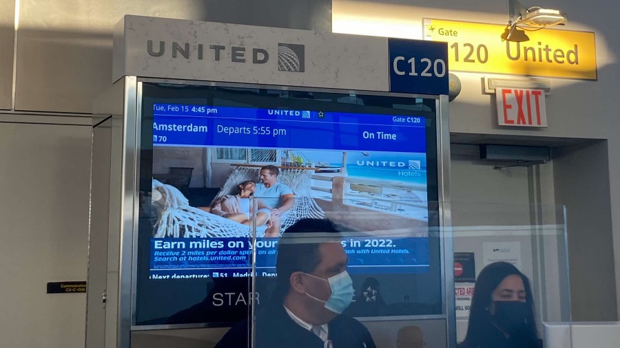
Day 117
In the morning we had our Covid tests and went to have a dip in the Caribbean sea for the last time üê≥. Afterward, we packed our bags and flew back to Bogota so we would be ready for tomorrow morning’s flight back home. Bogota was cloudy and cold so we calmly spend the last hours of our trip throwing out worn-out clothes and filling out all the Covid related travel forms üìñ.
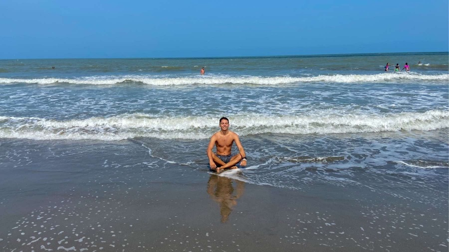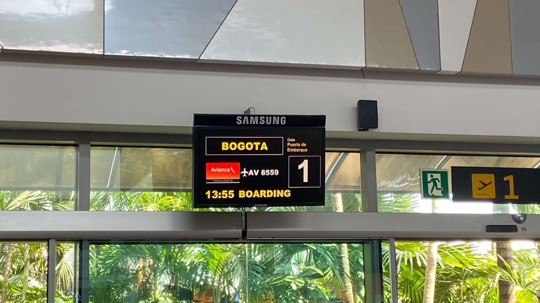
Day 116
For the last day in Cartagena, we enjoyed our terrace with a jacuzzi and in the afternoon went to a Colombian cooking class üë©‚Äçüç≥. We learned how to make traditional coca rice, patacones from green bananas and combine them to make delicious seafood meals üòã. The chef also surprised us with his knowledge of Lithuania and medieval Lithuanian history.
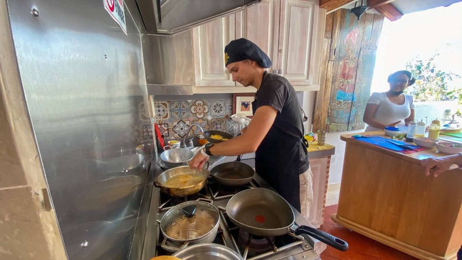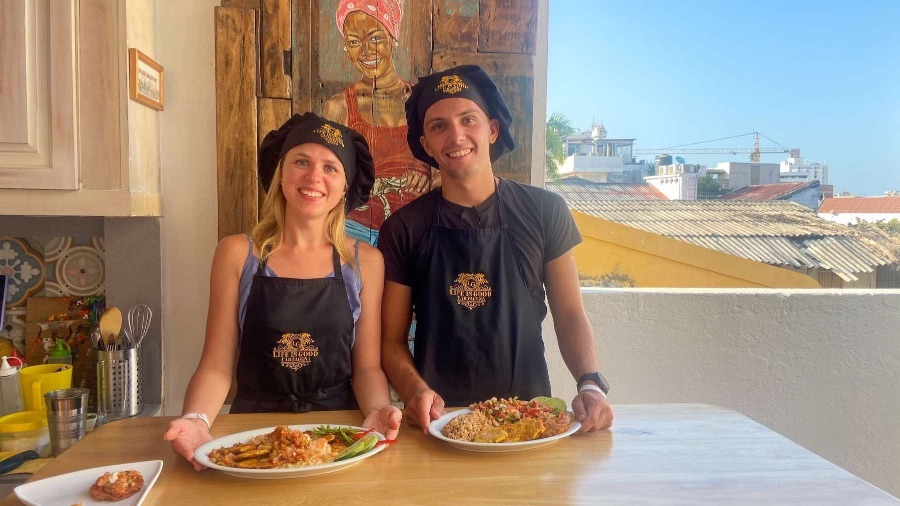
Day 115
We were in a touristic mood but the hot weather didn‚Äôt allow us to walk too much around the city so we decided to take a red touristic bus around the city which we haven‚Äôt done yet on this trip üöå. In the afternoon we moved into AirBnb that unexpectedly had clear views of the airport and we could see planes going up and landing while being in the terrace ‚úàÔ∏è.

Day 114
Today was just a calm day in Cartagena spending time in a hostel and walking around the neighborhood.
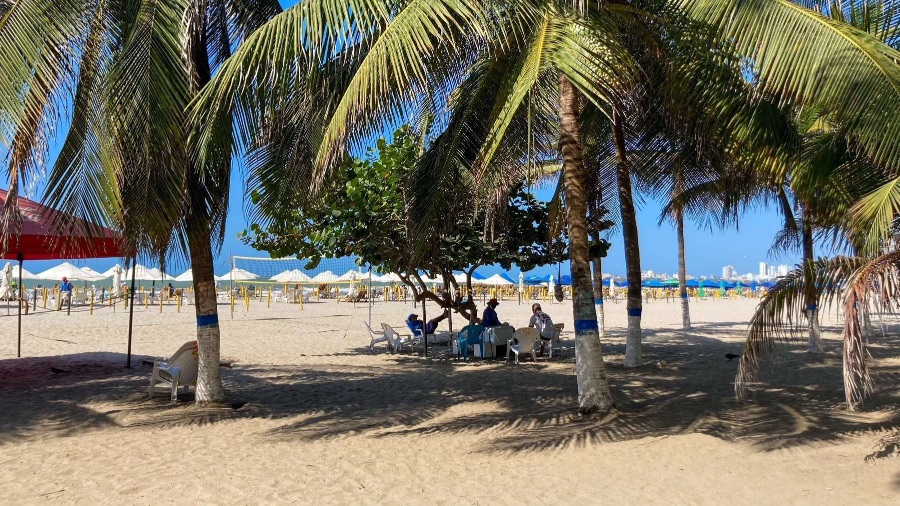
Day 113
Colombia has plenty of Caribbean islands and we wanted to visit at least one of them üèù. We chose one of the most easily reachable but for this reason probably most popular Isla Grande. In the morning we went to a port from which speedboats depart. It had a chaotic atmosphere so it took us asking around a lot until we finally sat on our boat. After about an hour of the ride, the water started changing the color to a light blue and we reached the islands. Isla Grande itself has no main ports so we just needed to ask our boat to let us go to one of the beaches and agreed on the time they‚Äôre going to pick us up.
Despite the popularity, it wasn‚Äôt crowded and we could enjoy a light sand beach and warm waters. The sea was so warm and calm that we just floated inside it for most of the time üåä ‚òÄÔ∏è.
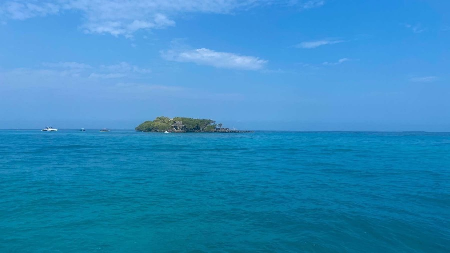
Day 112
We went out to take a look at the city center of Cartagena. Today was a cloudy day but it was still hot and humid so walking in the streets was still a bit uncomfortable. Cartagena proved to be a pretty coastal city. The sea, bays, boats, and skyscrapers mix with old colonial architecture and colorful graffiti. Due to this reason, it was touristic and had plenty of people chasing us on the streets offering their services. We also saw plenty of Lithuanian flags because the colors are identical to Cartagena flag colors üá±üáπ.
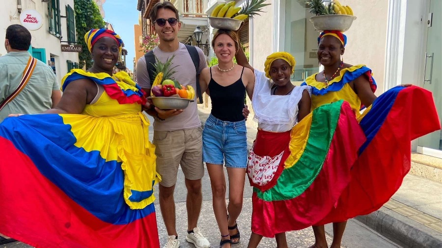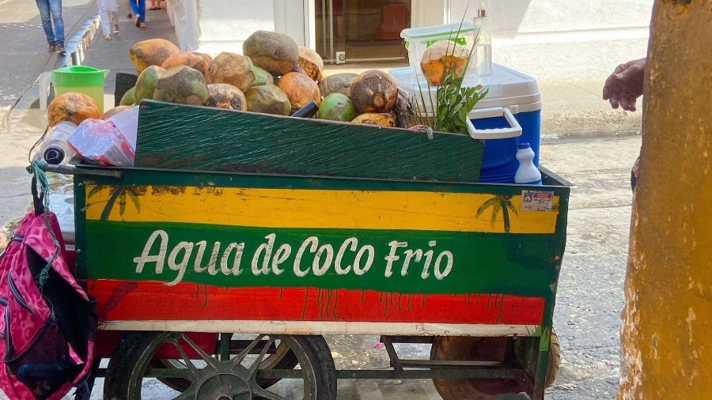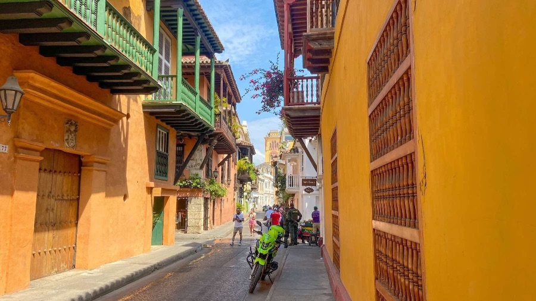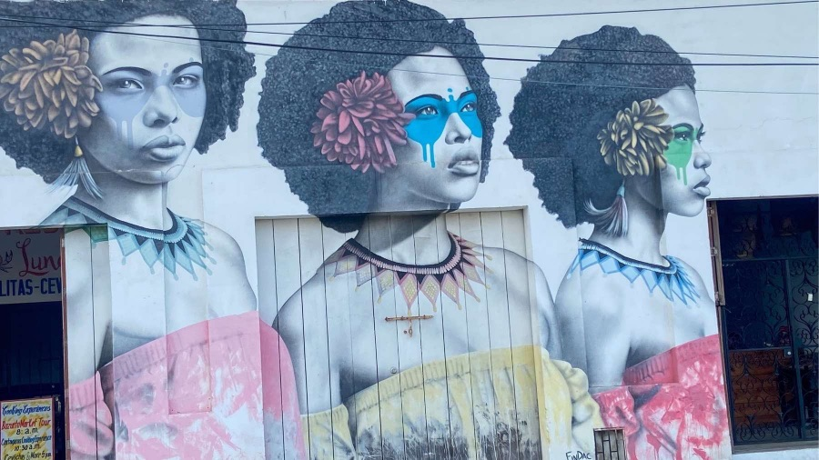
Day 111
We packed our bags to go to the city of Cartagena. We haven’t checked how to get there but by this point in the travel, we knew that we were going to get there somehow. We went to the main road in Palomino and caught a bus that goes back to Santa Marta. Before even reaching Santa Marta we saw a transportation company through our window that go Cartagena. We ran through a couple of roads and roundabouts and took a van that in the evening finally “delivered” us to our destination.
Usually here in South America finding transportation is super organic and locals don’t miss a chance to earn some money. Either someone is shouting your destination in the street or just catch you at the bus station and take you to the bus. When you’re a tourist they just find you and take you where you need to go.
Day 109
In the morning we had a moto ride and a 20min walk up the hill to participate in a popular activity here in Palomino known as tubing. Basically, you sit on your swim tube (doughnut), open a beer, and float down the river for 1.5h until you reach the sea üèû. It was very relaxing and unexpectedly enjoyable so the time just flew by. We enjoyed the sea and its tall waves for the remaining of the day üåä.
Day 108
Today we enjoyed the beaches of Palomino. This area is not famous for its beaches and attracts people more for the general atmosphere. The beaches were narrow but had a nice shade created by the trees which made them very cozy. In the evening strong tropical rain has started which eventually cut the electricity in the town for the remaining of the day ‚õà. The locals told that it always happens when the stronger rain starts and strong rain is no stranger in this tropical climate ü§∑‚Äç‚ôÇÔ∏è.
Day 107
In the morning we repeated our 30min moto rides this time downhill to the town of Minca. When 90% of the ride is going through nonstop bumps it again felt more like a separate activity rather than the only transportation available.
Before going back to the coast we wanted to go to a cacao farm. Locals pointed out that this is 1h walk so it sounded like a nice idea. Little did we know that we will be again going steep uphill with the heat making us sweat like there‚Äôs no tomorrow üòì.
The tour of the farm was highly educational. Same as with coffee we went through the whole process of producing cacao and chocolate. As the farm is organic we learned the lengths they need to go through to preserve the plant. They grow bananas, avocados, maracuyas, and other exotic fruits just so the birds and squirrels would eat something else instead of cacao üêø.
In the afternoon we had 2 hot bus rides to reach a coastal Palomino town where we plan to enjoy the sea and the sun ☀️.
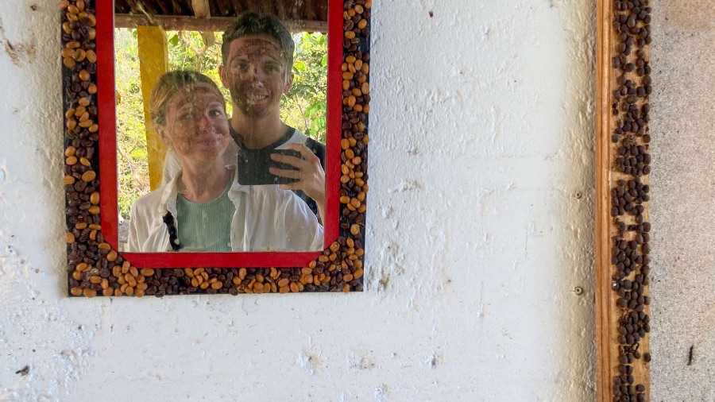
Day 106
Minca area which we arrived to is famous for its waterfalls, hikes and many coffee and cacao farms. After having breakfast we started a hike around the area which we soon found out to be too ambitious. In the middle of the hike, we had a relaxing waterfall experience under the freezing water. When we went down to a town to have lunch we met the first Lithuanian during our trip. She was traveling with her Colombian boyfriend so it has shown how hard is to encounter more conventional Lithuanian tourists.
In the end, we limited our plans so we could finish the hike before the sunset. We were happy to witness monkeys playing on the trees while on our way back üêí.
Day 105
For the next 2 days, we‚Äôre moving a bit away from the sea deeper into jungle valleys of the north coast. We took a hot collectivo van ride to the town of Minca where we switched it to a moto-taxi to go to our hostel. The moto ride was up the hill totally offroad with us barely managing to hold throughout the whole ride üèç.
We reached our hostel and our cabin which had one of the best views of our whole trip. We had our own net facing jungle hills and the Caribbean sea further on the horizon. Until the end of the day, we enjoyed the surroundings and the hot pool üåÖ.
Day 104
We took a flight to Santa Marta, the city on the Caribbean coast of Colombia. The airport was right on the sea so the views when landing were incredible. Next to the airport, there were yellow taxis and all the drivers with yellow Colombian football t-shirts. It’s not a coincidence as numerous people in the streets were also wearing football t-shirts and waiting for an evening match against Argentina. We joined the locals in watching the match which they unfortunately lost ⚽️.
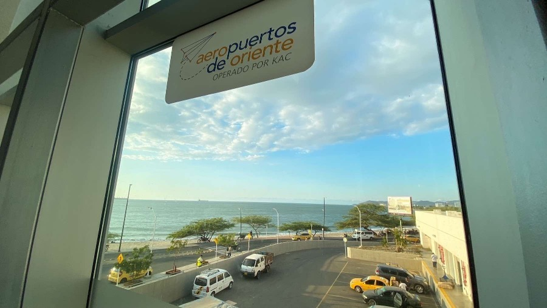
Day 103
Early in the morning, we went to the town of Guatapé. Next to it is the rock La Piedra del peño that the locals claim has the best view in the world so we decided to climb it and check it ourselves. The climb was steep but not too hard. At the top, the view was beautiful with many lakes and hills in our sight. Later we walked the colorful streets of Guatapé which had numerous ornaments painted on the walls of the buildings.
Day 102
Today we continued educating ourselves about the city this time going on the tour in the city center. The city is unique in a way that for ages it was ignored first by the Spanish conquers and later didn’t play any part in the liberation and independence movement thus they feel more like their own region and not as much Colombian. For this reason, the city center practically doesn’t have any colonial-style architecture but has plenty of unattractive (subjective) soviet style grey “modern” buildings.
The guide tried hard to explain the history of Medellin and the recent political developments of Colombia. He also went through horrific left wing-right wing-drug cartel-government wars that made him witness murders and dead bodies while he was still a small child. He showed places of bombings and shootings which are often forgotten (because of their frequency) or not spoken deliberately by Colombian people. This kind of “collective memory loss”, as he explained, is probably a necessity as it allows Colombians to be easy-going and relaxed in day-to-day life rather than being traumatized and sucked-in recent past. Also, it allowed the government to make controversial and even generous deals with the extreme right and left wing to stop the wars in the streets.
The transformation of the city center from a crime zone to a hope zone (as the guide described) was also a very deliberate city government move. They created lots of social programs to help people and combined them with inclusive infrastructure. They deliberately went to the most crime-prone areas and built parks, libraries as well as moved government agencies there. As the guide was the witness of these changes he told that as a young guy he finally had places to play and spend time rather than being in the streets surrounded by drugs.
This guide also refused to say the name of their most famous criminal, calling him you know who or Voldemort. He explained that for the locals it brings huge anger that some people especially younger and who don’t live here wear t-shirts with his face and almost worship him. For him and his relatives, it represents a traumatic bloody past. It also is a downside of their collective memory loss as refusal to speak about those times or educate about it creates these gaps of knowledge.
In these times, most areas of the city are completely safe. The city itself is incredibly green, beautiful, and modern. The locals are proud of their infrastructure, especially the metro which was built during the hardest decades and represents their resilience. What an incredible transformation!
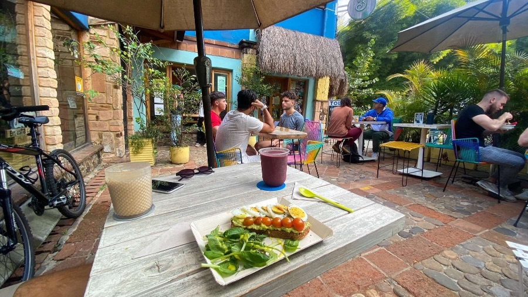
Day 101
Medellin is a city that transformed greatly from its recent tragic past and we were eager to learn more about it during our visit here.
In the afternoon we went on a tour to Comuna 13, a neighborhood that just over twenty years ago was one of the most dangerous places on earth now turned into this unique artsy district trying to reinvent itself while healing the wounds of the past.
We had a young guide who witnessed the latter stages of these horrors and lived through the great transformation. He presented the story of this district which for 50-60 years was completely neglected by the government and became a place of fighting for left-wing guerrillas, right-wing paramilitary groups, and later drug lords with poor people just being used as pawns. The guide refused to even say the name of this most famous drug lord, show any of the graffitis with him as the community feels a great hatred towards him.
The guide shared his own experience of his life in the early 2000s. The daily shootings and killings were the norm. They were ducking under the tables while in school while shootings were happening and he witnessed their teacher getting shot during the class. He had a friend who was made to kill a person while still being 8 years old. Hearing such stories from the person who witnessed it was haunting.
The life of the community became even more tragic in the late 90s and early 2000s when the government decided to use military force to bring order to the district. In 2002 they witnessed 3 days of constant bombardment, military treating anyone in the district as a potential enemy, and killing innocent people and children along the way. There are numerous murals in the district dedicated to this event.
At some point came the realization that it’s impossible to make improvements just by using force. The city government decided to invest in the infrastructure creating unique supermarket-style escalators connecting different parts of the district, building cable-car and metro lines. Also, social programs were investing in culture, arts, and sports that gave young people alternative and hope. Unique escalators and artsy streets became a hit in Colombia and later in the whole world bringing the first tourists to the district. With the new flow of money, people started opening shops, cafes and worked hard to push any crime away from this area. It was an incredible transformation that is still ongoing. Only 2 years ago government officially declared this place as touristic bringing even more awareness, security, and money. Local people love tourists here as this industry gave people hope and opportunity for the first time. Now, incredibly, this is one of the safest places in the city.
In the evening we tried cable-car as a mode of transportation and it has to be the craziest and the most efficient thing at the same time. We took a 20-minute loop that went from the 13th district to even more outer layers of the city. The cable cars went super fast up and down sometimes being very close to the roof of the buildings, sometimes going a hundred meters above the ground over the hills which made us realize that the city is much bigger than we first perceived.

Day 100
It’s the 100th day! It has also proven to be a classic South American bus travel experience with mountain roads and traffic jams which has caused us to arrive at Medellin only after sunset. Fortunately, we were able to immediately witness the good vibes of the city when we saw a crowd dancing salsa in the middle of the bus station. We had some problems with our canceled hostel reservation but eventually, we managed to find a place to sleep and settled in our hotel.
We went out to celebrate our 100th day and what a great city it was to do that! The streets were buzzing with people, music, bars and they had an interesting mix with nature as trees were bursting from every corner.
Cheers to the great 100 days of travel! ü•Ç
Day 99
We started the day early to go for a hike to the Cocora Valley. To go there you need to take one of the colorful jeeps that are going back and forth from the central square. The valley itself was breathtaking with the views we never witnessed before. Green jungle-like hills were surrounded by extremely tall and lean palm trees in the valley. We enjoyed a 2-hour hike before coming back to the jeeps. The journey back was adventurous. When someone doesn‚Äôt fit to sit in the jeep it‚Äôs not a problem - locals simply offer you to stand at the back of the car. In our case it was 4 of us made to stand and we barely fit. The car was going fast through the hills and it was our job to hold tight and constantly dodge tree branches along the way üòÖ.
After lunch, we went to Finca El Ocaso for a coffee tour. Since this is a coffee region there are many local farms called fincas that produce and sell coffee. We went through the whole process ourselves from growing to roasting during the tour. We learned a lot and understood why Colombia is one of the biggest arabica producers in the world. We finished the tour in the lab by smelling and tasting coffees of different types and qualities ☕️.
 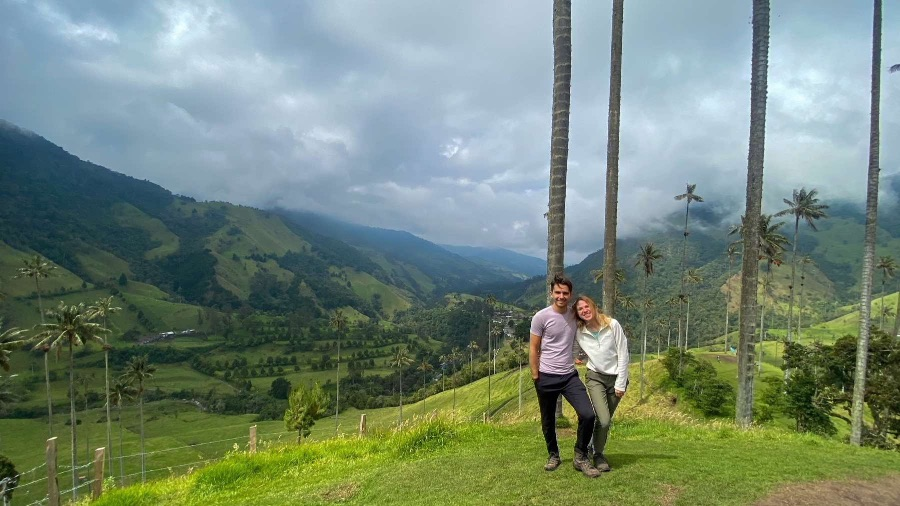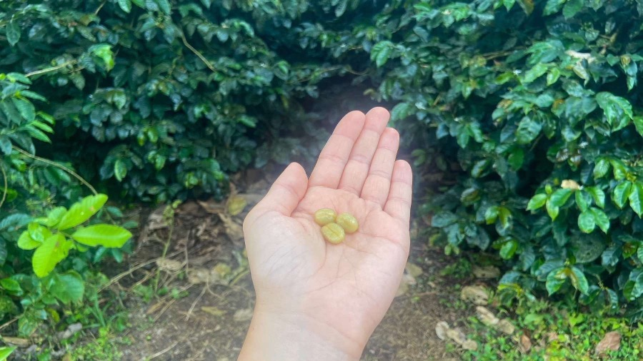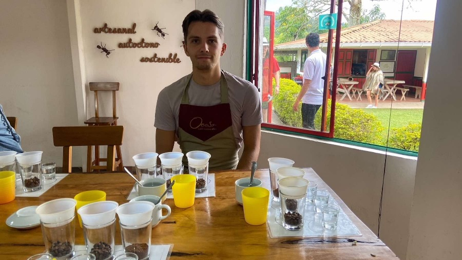
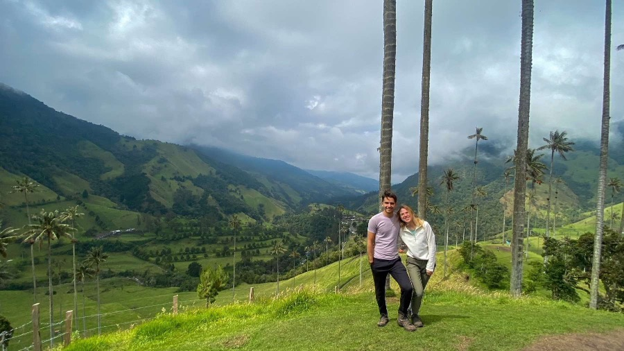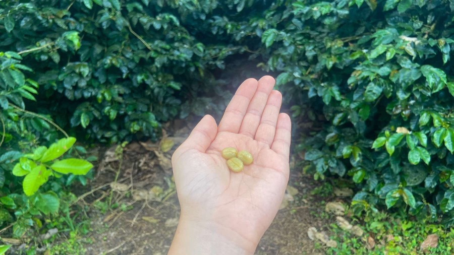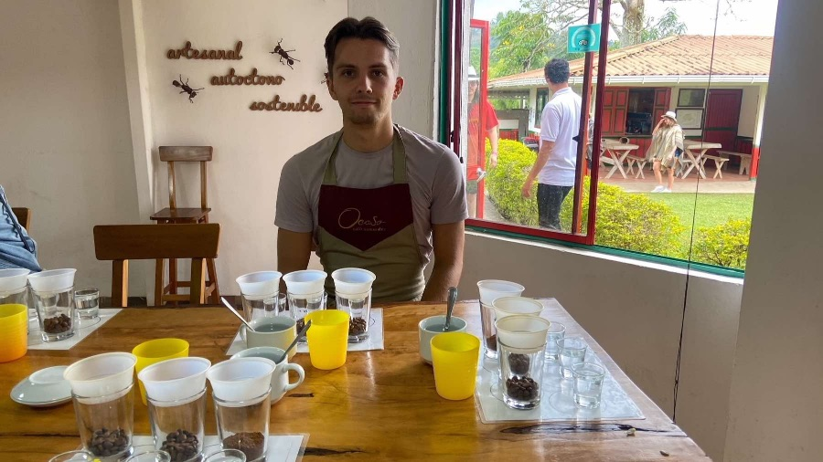
Day 98
At 2 AM we were woken up by the sound of someone entering our apartment üò±. Gabriele reflectively shouted ‚Äúwho is that?‚Äù and for me, everything went too fast as the doors of the apartment closed before I could react at all. Needless to say, we were frightened and stunned by what just happened. I went out to the corridor and there was a young woman there. She explained that she‚Äôs a housekeeper and according to her schedule our apartment should‚Äôve been empty. That still wasn‚Äôt enough of an explanation of why would you come to an apartment in the middle of the night?! We contacted the Airbnb host. At first, the housekeeper explained to him that she was told that there is an emergency which also didn‚Äôt make sense because how do you know about the emergency in the room that according to you supposed to be empty. Later, it turned out she was just planning to sleep in the apartment that she thought is empty. For the remaining of the night, it was hard to fall asleep as in our minds someone else was about to burst into our apartment any moment.
In the morning we went straight to the airport. We were happy to discover cheap internal flights in Colombia so we exchanged a 7-hour bus ride for a 30 minutes flight to the city of Pereira. There we jumped on the bus and after an hour arrived at the super cute Salento town. We climbed the hill to overlook the landscape and got served coffee with brandy by the local vendors.
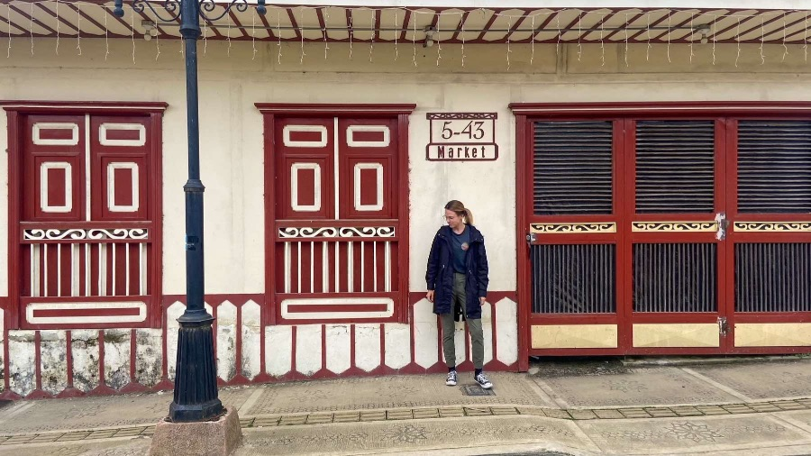 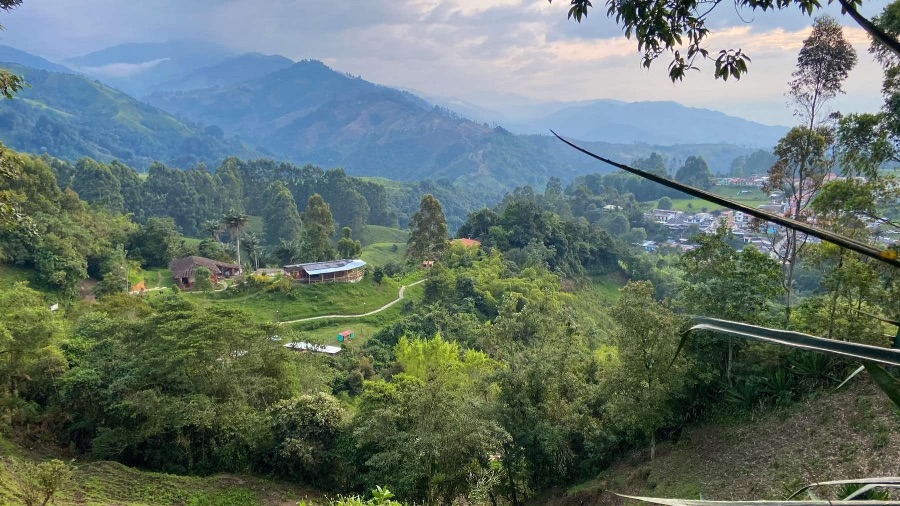
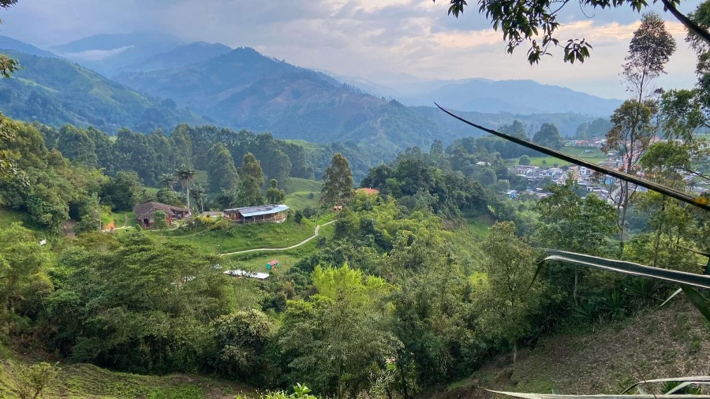
Day 97
After 10 days we were finally recovered from Covid. We went up the Monserrate hill to look at the panorama of Bogota. The rain and fog distorted the view a little bit but it was a good feeling being tourists again.
In the last few days, we moved from the hotel to Airbnb so we could have a kitchen and cook food for ourselves. It was also the kind of building we encountered not for the first time in South America: with gym, co-working spaces, terraces, laundry, and other convenient services. I used the chance to bike a little bit as the body was mostly laying down in the bed for the last 10 days.
Day 96
We went out for an hour to look around the historical part of the city. One of the main 7th street was crowded and full of people. It had a feeling of a cheap resort as there were street musicians, performers, and sellers but nothing looked of good quality. We didn’t feel comfortable walking around so many people so we just peeked and left.
Afterward, we walked through the main Bolivar square which was full of pigeons (also recognized some buildings from the certain Netflix series) towards the La Candelaria district which had beautiful street art and cozy streets which we enjoyed much more.
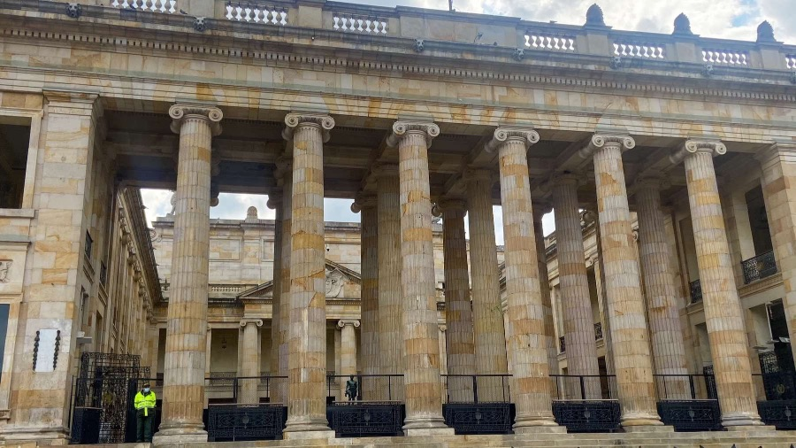
Day 95
This disease has proven to be a no joke, after the fever and other symptoms have ended the energy of our bodies still felt completely drained. We felt that this was the time to start recovering so we allowed ourselves to walk around the botanical gardens and local parks. They were lively and comfortable. In the Parque 93 close to where we live there were tables and chairs with people having take-out lunch and we happily joined in ☀️.
Day 88-94
At night I had a bit of a fever and in the morning we both felt sick. It was quite difficult to get a spot to do a Covid test but eventually, we reserved a time and the PCR test came out positive. So at around day 90 the reality of today’s world caught up with us. We were lucky that after jungle we allowed ourselves to take some nights in a good hotel which has become a blessing as we spent all of our time in the room.
Local delivery services also have proven to be great and Gabriele even ordered a puzzle which was a good challenge to take throughout all these days.
This is how most of the week went: movies, YouTube, books, sleeping, and occasional looks through the window to the ever-changing weather of Bogota.
Day 87
After getting some sleep at night we woke up for our first day in Bogota. Traditionally, we went out to a local mall to check ATMs, buy a SIM card and check the overall city environment. We are either becoming more experienced or Colombia has a good level of services, as we have taken care of all the business fast. When entering the mall we felt the difference in the country’s priorities. While in Brazil and Peru we always needed to show our vaccination passports or at least disinfect hands, in Colombia we only needed to allow dogs to sniff our bags to enter the mall.
We were living in a higher level Chapinero district and you could feel it when walking around. Although we didn’t have clear expectations of what the city will look like, it still surprised us. Everywhere around there were mostly red-brick buildings, lots of trees, and lots of bikers. It felt like a Western European city rather than a city in South America. Also, Bogota is referred to as a fridge of Colombia, as the temperature rarely goes above 20 degrees so it likely contributes to this feeling in the city.
We finished the day early as we felt tired and a bit dizzy.
Day 86
It was our last day in Peru. We were amazed by how much contrasts this country can offer: beaches, deserts, volcanos, penguins, rainforests, mountains, varieties of foods, and deep cultural heritage. It’s a true travelers paradise and we still have entire regions unvisited.
For the last time, we enjoyed the beauty of Lima’s coastline and said goodbye to the ocean. The city itself looked to be an ideal place to be with almost zero rain throughout the year, temperatures in the mid-twenties, and occasional clouds to get through the day without a sweat.
In the evening we took our backpacks and went to the airport. The entry to Colombia was almost as easy as to any European country although we encountered one of the stricter airlines who had to make sure every single dimension and weight of our backpacks did not violate their policies.
It was well after midnight when we took Uber and went to have our first night’s sleep in Bogota.
Day 85
Being in Lima again was so familiar that it almost felt like home. After a week in nature, it felt great going to the hairdresser and doing obligatory beauty procedures. They even give neck and head massages after cutting hair (I remember the same being done when I went for a haircut in Egypt) and we should definitely bring this practice to Lithuania (or maybe I am going to wrong places).
The rest of the day was spent thinking where we go next. We settled on Colombia üá®üᥠwhich we had in mind for a while and booked tickets for tomorrow. Exciting!
Day 84
The morning meant the end of our special time in Ceilan. We had our last breakfast, played a match of checkers (with Inca v Spanish-themed chess pieces that we absolutely loved), and said goodbyes to family members who made our stay there for a week really amazing. Shaman Alberto with his wife Maria have accompanied us all the way back to Pucallpa airport where we had our flight to Lima. We only reached the hostel late at night where we exchanged sounds of nature with sounds of people partying.
Day 83
Today we went to the nearest town to get on the internet. We went to a classic internet café which we haven’t seen since the 2000s. They even had classic games such as Counter-Strike 1.6 so it felt like taking a time machine.
Day 82
Today was an eventful day. We saw how ayahuasca is being boiled in the village, walked around the jungle seeing amazing nature, and held a small alligator which is grown at home. The moment we went away just a little bir deeper into the jungle to see a huge mango tree we got attacked by clouds of mosquitos. I got a massage with tree branches, similar to vantos and later played football with the local guys. Our football match felt like a true event. People from the village sat around, bet money on our game, and shouted that I’m going to sleep outside if I don’t score a goal. Luckily I did ⚽️.
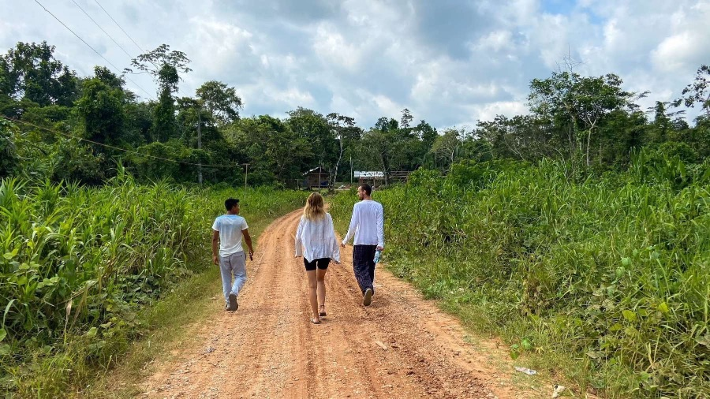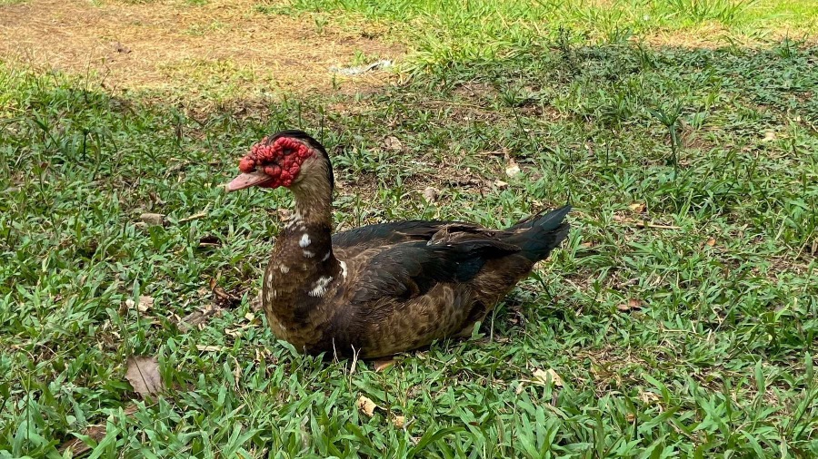
Day 81
It was finally a cloudy day which made life much easier. Also, we got treated to massages to relax our bodies. In the evening the heat of the week resulted in a strong and refreshing jungle rain üåß.
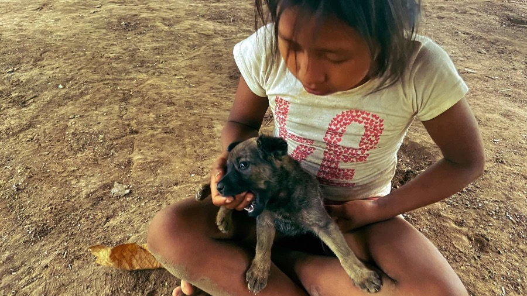
Day 80
This morning I tried to exercise but mosquitos attacked too much so I had to stop ü¶ü. Throughout the day we heard stories about the people who were coming here for the last 20 years as well how young local people balance their lives in a jungle with the more common lives in a city.
Day 79
We woke up in a temple and went to have breakfast. Since we didn’t have much sleep strong breakfast, coconut, and cold showers were essential to start the day. The day turned out to be even hotter. We spent the first part of the day laying in hammocks and reading books. After lunch, we went swimming in a river. It was so hot outside that you didn’t want to leave it and just wished to stay there all day. Only some places are safe to swim in. In other rivers and ponds there are piranhas or even anacondas.
Tuk-tuks were everywhere in this region and everybody was driving them. Men and women, girls and boys. In the afternoon I sat down to learn how to drive it. Essentially it‚Äôs a motorcycle that does not require balance, sort of like a bicycle with the helping wheels, so I was learning to drive a motorcycle in an easy way üòÖ.
Day 78
We woke up by the buzzing sound of the jungle. We went to the kitchen to have breakfast and were greeted by a laughing grandmother telling us preparar para vomitar which was our first of many encounters with their wonderful sense of humor.
One of the most important things for them and ceremonies is to have a clean body. So we got served a bucket ü™£ (a real bucket) each of a special tea which we had to drink to begin cleaning the body. It wasn‚Äôt the most pleasant experience, to say the least, and we felt a huge accomplishment when we finished the process.
Afterward, we had breakfast and started slowly feeling the heat increasing. It’s a rainy season here in a jungle but it was an unusually dry and hot streak of days. We struggled to find a place to hide from the heat as both inside and outside was too hot for us. Today we went to shower 5 times as it was the only way to feel fresh.
In the afternoon Pio took us with a tuk-tuk to take some cocos. It was the first time for us to both take cocos from the trees as well as try opening it with the machete. For me, it was a frustrating and hard experience. I really felt like a city boy taken to the village as it took me too much time and being completely wet when the coco finally opened üòÖ.
Today was our first ayahuasca ceremony so we didn’t have any dinner. We went to shower with the special aromatic water, got dressed, and at 8 PM went to the ceremony.
About ayahuasca ceremonies in general
In a week a visitor usually participates in 3-4 ceremonies and experience can differ person per person and time from time. All the other details are pretty much the same every day. Since there’s a lot of mysticism and both wild-optimism as well as skepticism (depends on who you ask) about the ayahuasca throughout the week we tried to get a sense of what these ceremonies mean for locals and why do other people come here.
For the local people ayahuasca is first of all a medicine (they call it medicina). The king and the legend of all the medical plants they have. It is a medicine to clean the body, and most importantly, clean the mind. All the people have smaller or bigger problems that they need to face and address. The process of drinking ayahuasca can be intense and ask for a lot of mental and physical energy. Only after overcoming all these obstacles, you can get your mind clean and calm.
A ceremony is always a family event. Whether there are or aren’t visitors, locals meet once in a while for an ayahuasca ceremony, to connect with the family and help each other with the process. It is something they have had in small quantities since childhood (from 5-6 years old). When there are visitors ceremonies are more frequent but they are still always happening together with the family. In each ceremony, we had shaman Alberto with wife Maria and then either their children, nephews, their cousins, mothers, or grandmothers joining as well. Everybody is there to participate as equals as well as help visitors to feel calmer.
The ceremony happens in a round temple building. When you come in the evening it is only lit by candlelight. Along the walls of the temple, there are mattresses with pillows and blankets, next to them are buckets. The first hour is for chatting and getting in the mood. Some locals immediately come in the pajamas so you can get a feeling of a family sleepover party. They smoke their home-grown tobacco which they consider sacred. Then the shaman takes a small glass, pours ayahuasca, and invites people one by one. The amount depends on each person. During the first ceremonies, you get very little just to see if there are no unexpected reactions to the body and understand the effects. After drinking ayahuasca the candles are blown and it gets completely dark. Your job as a participant is to set the intention in your mind and just to be calm. Then the shaman begins singing with others occasionally joining in. The singing took on average 4 hours but it can vary from ceremony to ceremony depending on the overall mood. The shaman constantly sits next to participants, sings, asks how they are doing, if needed gives a massage to relax a body or gives advice. During the ceremony, there always comes a point when the family jokes around and laughs a bit just to create a more relaxing and casual feeling. An hour or two after midnight some people leave for their homes while the other part stays in the temple and eventually falls asleep. Throughout the day you meet different family members who are interested in your experience and give guidance for the next ceremony.
Day 77
In the morning we got on the plane to fly to Pucallpa with the goals to get to know the daily life of local Peruvian jungle communities and participate in ayahuasca ceremonies.
In the airport, we were greeted by Alberto, an uncle of Peruvian friend Pio who we traveled with to Machu Picchu. We took a tuk-tuk to a river port and jumped in the boat. This was a boat that connects Pucallpa with the communities in the jungle. After a hot 2-hour boat ride which featured a blasting 2010s pop music playlist, we walked through a muddy road to take another tuk-tuk and after half an hour we reached our final destination, a village of Ceilan.
Our tuk-tuk stopped next to uncle Alberto’s house and we immediately met a big part of their family: wife, kids, and grandmothers. A 2-minute walk from the house there was a huge area designed for accomodating guests and organizing ceremonies: barracks for sleeping, a kitchen/dining building, a shower, and 2 wooden temples. We met another friend from Machu Picchu Bogdan who was the only other guest/foreigner there at the moment. This was one of many places that lost many visitors due to Covid.
It got dark quickly, we had our dinner and went to see a ceremony. Today we were only spectators but it was an interesting spectacle, with many family members: grandmothers, cousins, brothers, and sisters joining to connect, drink ayahuasca and sing songs in Shipibo. We went to sleep in our barracks early before the end of the ceremony to be fresh for tomorrow.
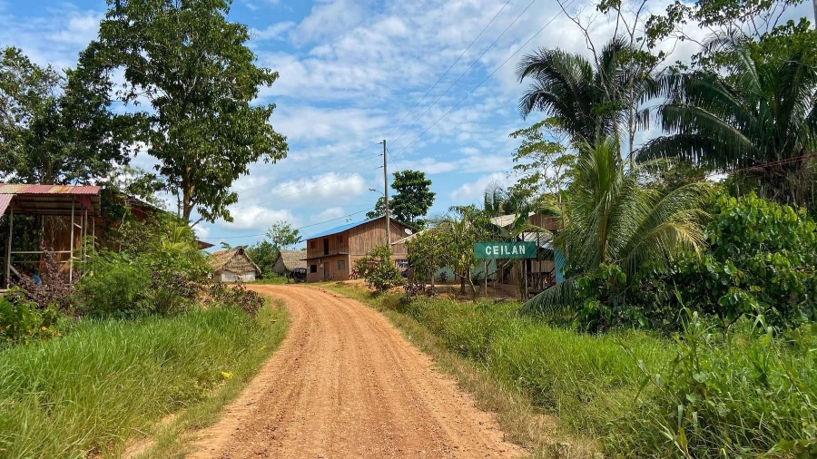
Day 76
We continued crossing off items on our checklist throughout the day. We also had a problem with the airline we booked our flights with as they wanted to move us to the flight in the evening. After a day-long back and forth we settled on a flight that will be 2 hours instead of 12 hours later.
For the lunch, we took food from the restaurant we saw on Netflix Street Food: Latin America. They have 3 classic Peruvian meals as a combo for lunch and we couldn’t finish them during both lunch and dinner.
In the evening we packed our bags as we‚Äôre excited for our new adventure to the jungle üêí !
Day 75
After 1.5 months we were back in Lima. In the morning we were already in Miraflores district and our hostel. We felt an incredible contrast being here compared to other places in Peru. It was super clean, calm, modern, seemingly no chaos, no dogs or tuk-tuks going around, something we felt we missed, at least for a day.
In the morning we booked our flights to go to the jungle. We decided that it’s an experience we don’t want to miss before leaving Peru.
We had a bunch of business to take care of like laundry and trying to fix our camera. It was more than 2 weeks without a camera as it broke when I dropped it the moment we entered Machu Picchu. After speaking with specialists in a couple of photography shops and chatting with a couple on WhatsApp we couldn’t find anyone to make a proper inspection of the Fuji camera so, for now, it will stay as it is.
In the evening we had a picnic as well as enjoyed picarones as a desert.
Day 74
Pacasmayo town where we stayed is more or less in the middle between Lima and Mancora so we decided to take a bus and finish coming back to Lima. We had the bus in the evening so we went to the beach which was finally open. It was Sunday and the beach was packed with people. There was a 2-day alcohol ban around the beach area as well which was lifted today, so you could see everyone enjoying beers and the sun. The waves were incredibly high and strong here which made it super fun to be in the ocean, despite the water being much colder than in Mancora.
We waved goodbye to the beach, at least for now, and went to the bus station to take an overnight bus to Lima.

Day 73
We started 2022 with a walk through the town and as the beach was still closed we could see people continue partying at home throughout the day blasting the music in the street and kids still throwing firecrackers. We on the other hand were in a bit calmer mood and climbed on the roof of our hostel to read books and relax üìö.
Day 72
The last day of the year began by catching a ridiculously old and small taxi to get to the bus station. We took a 3-hour ride to the town of Pacasmayo. When we arrived it looked quite cute and colorful. Much tidier and calmer compared to Mancora.
We went to our beachfront hostel and got (un)expected news of the day. The town government has closed the beach for 2 days. There was a big Christmas party on the beach that the government didn’t like so they decided to ban the beach altogether.
In the evening we went to see the last sunset of the year. The boardwalk next to the beach was opened while the beach itself was guarded by police and military. The fact that there were soldiers with rifles who stood there to stop people from going to the beach was both intimidating and silly at the same time.ü™ñ. I guess we‚Äôll be ending 2021 with the same note as it began.
With midnight approaching the central square and restaurants were calm. We unexpectedly found crowds of people in the market streets still making last-second purchases. Many vendors were selling tamales, a local dish wrapped in a banana leaf. It looked to be a thing to buy and eat during the new year celebration. Others were selling grapes, Peru sharing the same tradition as we saw in Spain of eating grapes at midnight. We also noticed a disproportionate amount of people wearing yellow clothes and accessories. Those who didn‚Äôt wear it were still trying to buy some yellow underwear or at least a necklace at 10 PM as people believe it attracts luck and riches üü°.
Midnight came with people leaving their homes and lighting up fireworks. We lifted the glasses with champagne to what has been a great ending to the memorable year hoping for even more adventures to come in 2022 ü•Ç.


Day 71
Today we moved out of our hot Airbnb and took a bus to leave Mancora. We might have stayed throughout the new year celebrations but nearly everything was booked and super overpriced. We still wanted to be at the seaside during the new year celebrations so we picked a random town to travel to.
After 7 hour ride, we reached the city of Chiclayo which wasn’t our final destination and just a stop for a night. We went to eat dinner at the only restaurant in our district which blasted loud music and had some people celebrating new year (or in fact halloween) a day too early.
Day 70
This morning I continued learning surfing. This is a popular time now in Mancora with a lot of people arriving to celebrate the new year so there were tons of other surfers in the water. The big challenge was not only to surf but to try not to bump into anyone üòÖ. Despite that, still, it was a good feeling surrounded by so many surfers who were all super friendly and in a good mood. In the evening we went to see the sunset on the beach bar.
Day 69
Today I had my first surfing lesson üèÑ‚Äç‚ôÄÔ∏è. The waves here in Mancora are good for beginners so it was a good chance to try it out. At first, we learned the basics of correctly standing up and afterward moved to the water. Although I had a couple of good falls still managed to stand and go on the wave on more than a few occasions. What a good feeling, hope to improve fast!

Day 68
We‚Äôve got to see more of Mancora today. The hardest thing has proven to be crossing the street with tuk-tuks going non-stop on the street. On the other hand, we never experienced such efficient transportation as after barely taking a step out of Airbnb at least one tuk-tuk is always waiting for us üòÖ.
Day 67
After Christmas ended and one week has passed in Mancora we planned to continue our journey on the seaside. Ideally, we wanted to go to Ecuador which is very close to Mancora. However, due to omikron Ecuador has closed the land border with Peru and the only way to go there is to go back to Lima and then take a flight. We haven‚Äôt yet wanted to travel long distances so we decided to stay in Mancora for couple more days and enjoy the beach üèù. We moved to an Airbnb on the other side of the town.
Day 66
We enjoyed our Christmas day by appropriately eating too much food, watching movies, playing board games and table tennis üèì.
Day 65
For Christmas Eve, we grabbed coconuts, fruits, wine, and of course Panettone and enjoyed a cozy night watching Harry Potter. It was a new experience for us to celebrate Christmas during summer under the palm trees and we enjoyed it. The hosts of our hotel invited their friends and family to celebrate Christmas together and we had a glass of champagne together with some guests üéÑü•Ç.
Day 64
Breakfast, exercise, beach, books, fresh juice, ceviche, and repeat üîÅ. We enjoy our rhythm here. One thing that is also certain in Peru and especially here in M√°ncora is that dogs are living their own lives and they will never pass the opportunity to say hi üê∂. The hotel dog is excited every morning to check what we have for our breakfast and after that goes to lay down on the chairs by the pool.
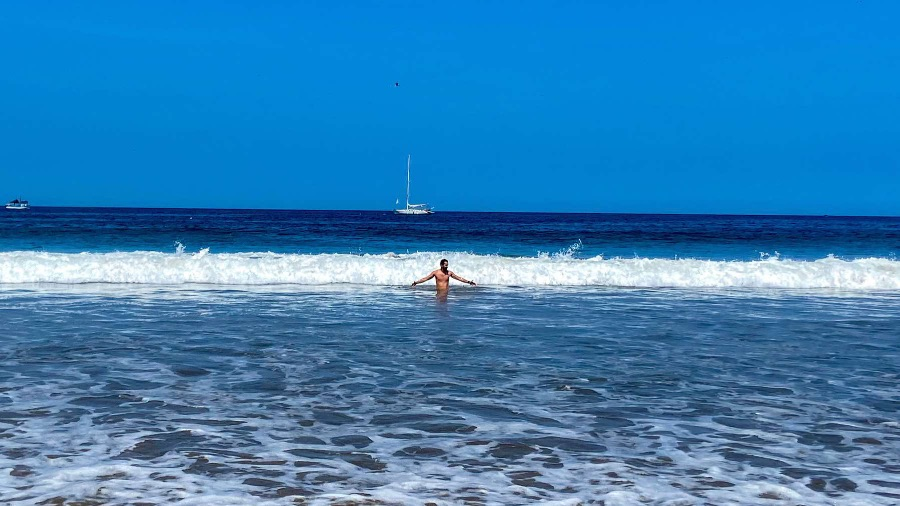
Day 63
We finally went a bit further away from our hotel and the beach. Máncora itself is a small but chaotic town. There’s a road right through the city which is buzzing with buses, trucks, and tuk-tuks. While passing by they always leave huge dust clouds behind them. We went to check a local market and saw some cozy local places to have lunch in. As usual, Peruvians love their own traditional food. In scope of the lunch you can get ceviche as entrada and any larger meal as segundo.
Day 62
We started coming up with our holiday routine: breakfast, exercising, beach and books. We were also eager to try ceviche here and compare to the previous places we tried and it certainly didn‚Äôt disappoint. In the evening after arriving a couple of minutes too late to witness a sunset we went to have a pizza. It looked like a decent place but the pizzas were terrible so we might need to settle on ceviches while being here üòÄ.
Day 61
It‚Äôs strange to say but it felt for us that it was a start of a holiday inside of a holiday. After having breakfast on our patio we went immediately to the beach. There were finals of the local surfing competition happening there in which our hotel owner and her daughters participated. We watched everything with great interest as we want to try learning surfing in the following weeks üèÑ‚Äç‚ôÄÔ∏è.
Day 60
We felt super fancy today flying in our premium seats to Talara ✈️. It’s a place which we heard for the first time when booking our tickets and we flew without having a clear understanding of how the place looks. We didn’t quite expect it to look like half-desert half-dunes which we saw when landing. The airport was one small building and we were the only plane there. We took a taxi ride through this landscape to our hotel in resort town Máncora.
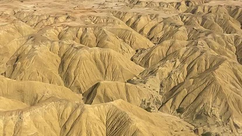
Day 59
The goal of the day was to decide our next destination. We were deciding between going to the jungle to explore, going to the jungle to attend ceremonies, or going to the seaside. Although jungle experiences looked extremely tempting, at the moment we felt that we finally wanted to have proper beach time and relax üèù.
This was the last day strolling around the busy market streets of Cusco so we took a couple of pictures to capture the mood.
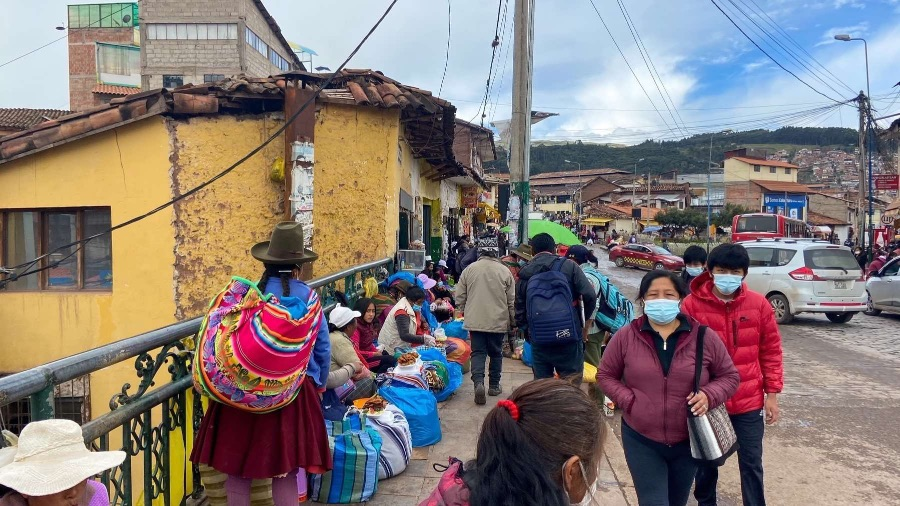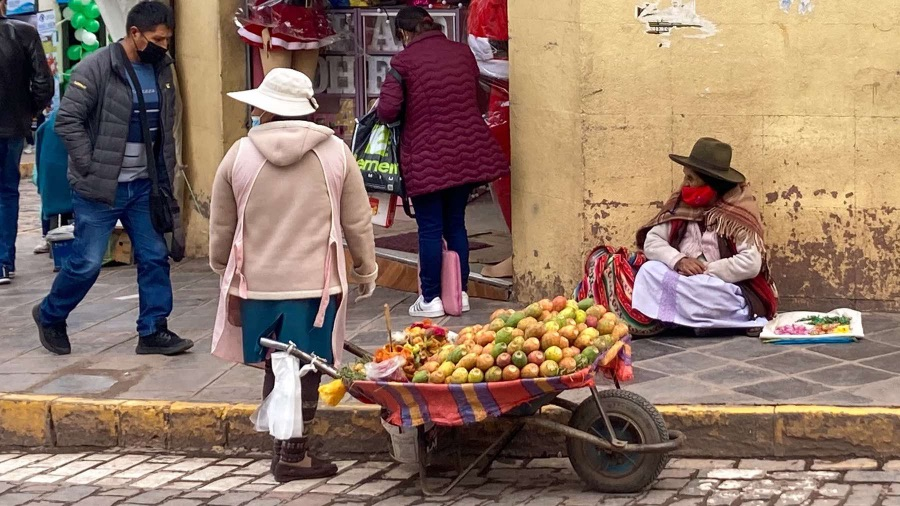
Day 58
Today was an aftermath of the Inca Trail so we didn’t feel like doing much besides bringing our clothes to the laundry as we didn’t have many clothes left. In Cusco, a lot of places side-hustle as laundries, so it was enough for us to bring our clothes to a small food market which also takes care of the laundry.
After that, we got curious and made a small stop in a Coca Museum. It was half museum half coca store but was nevertheless interesting. Many ancient sculptures had coca leaves in the subjects’ cheeks showing the importance and normalcy of coca in day-to-day lives. The later fusion of Andean and Christian cultures also produced such an exotic concept as Virgin of the coca.
Coca store has proven that you can make pretty much anything using or including coca: flour, beers, creams, chocolates, teas, and much much more.
Day 57
As we were falling asleep for the last night, we heard our friend from the Amazon jungle starting to sing ritualic Shipibo songs. He was very close to nature during all the hike, stopping and examining the plants and doing little rituals along the way to express his gratitude to Pachamama (mother earth). We were woken up a couple of hours later by a rumble of thunder and strong rain. The lighting was constant and extremely bright. We had never experienced such a strong storm while being in our tents. One thing we hoped is that it ends before we need to start hiking.
At 3:45 AM our guide shouted that it’s time to get moving. While we were dressing we could still some rain dropping on the top of the tent, however, by the time we were putting on the shoes the rain was over.
After 5 minutes hike, we approached the entrance of the last section of Inca Trail. There we had to wait for rangers to come, check our documents and open the trail. We also saw all the people who hiked the trail at the same time as us. There was our group of 4 and three groups of 2 people, that’s it. Pre-covid we would have had a line of couple hundred people waiting.
When we passed the checkpoint it was all about being fast. The goal was to arrive at Machu Picchu before people who come by trains and buses. We were absolutely flying throughout the trail for more than an hour, it felt as if the last three days were just a preparation for the last day’s sprint. We reached a midway point Sun Gate. There all the hikers were congratulating each other as we saw Machu Picchu for the first time from far away. This point can only be reached by people going Inca Trail. Our guide was amazed, he told that we are the first group since the beginning of September who didn’t have any clouds and fog and could see Machu Picchu from the Sun Gate.
We started our last section of the hike towards Machu Picchu. Our Canadian friend who was the fastest hiker by far doing the whole trail managed to injure himself while posing for a picture. So he took a hiking pole and limped through the last part of the hike.
The entrance of Machu Picchu for Inca Trail hikers is quite interesting. We just entered straight into it from the side, making other travelers wonder where we came from. Then we had to walk through Machu Picchu against the flow and exit through the actual entrance so our tickets could be checked and we could officially come back.
The sun was shining and there were just a few clouds. We took pictures and had a guided tour through Machu Picchu. It was more beautiful and interesting than we expected. As such a touristic and well-advertised place sometimes it can be disappointing but it wasn’t the case for us. We learned how people were building it, how it was probably used, and how it was abandoned by Quechua people the moment they heard the Spanish were coming. The locals destroyed parts of the Inca Trail so it couldn’t be easily reached and after a while, Machu Picchu was covered by grass, trees and rediscovered only centuries later.
After the tour, we said our goodbyes to fellow travelers and the guide. They were taking a train back home but we had another 3 hours of hiking as we chose a cheaper option of coming back by bus from the town nearby.
For the first half-hour, we had a steep descent from Machu Picchu to the village of Machu Picchu. Our knees again reminded us of how they were treated the last couple of days. After we passed the village, we just had to follow the train track. The hike was more interesting than we expected. Next to Machu Picchu, it is the beginning of Amazon Jungle. So while on one side we saw mountains on the other we saw deep and dark forests. Our bodies felt that this is the last hike so the tiredness reached the peak point just before we reached the town of Hidroelectica and our van.
We sat in our van and started the ride back to Cusco. It was anything but easy. It was hot, not air-conditioned and we never witnessed 6 hours of nonstop zig-zags through the mountains. We reached 4000m+ elevations and went down a couple of thousand meters before going up again. When we reached Cusco it was already late evening and we truly felt that the ride has demanded more than the hiking itself.
Overall we are extremely happy with the experience we had. The trail itself, the weather, the fellow hikers, guide, chef, and porters made everything truly memorable. And now, it was time for us to finally get a good night’s sleep in a bed.
 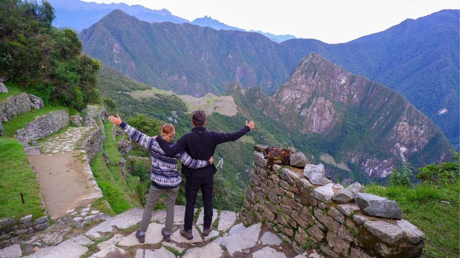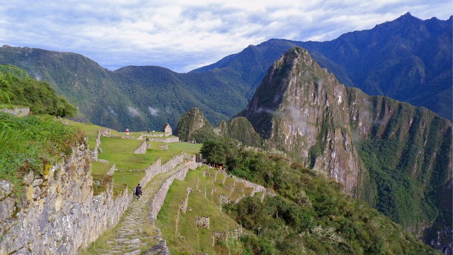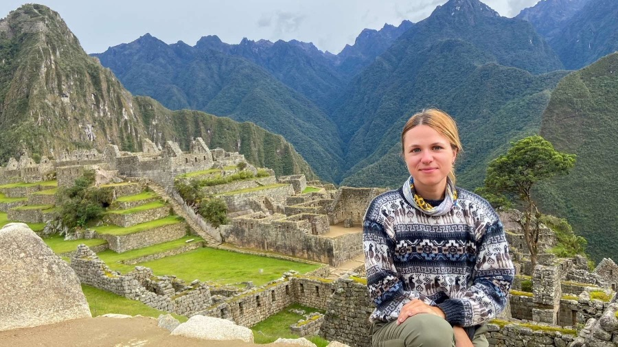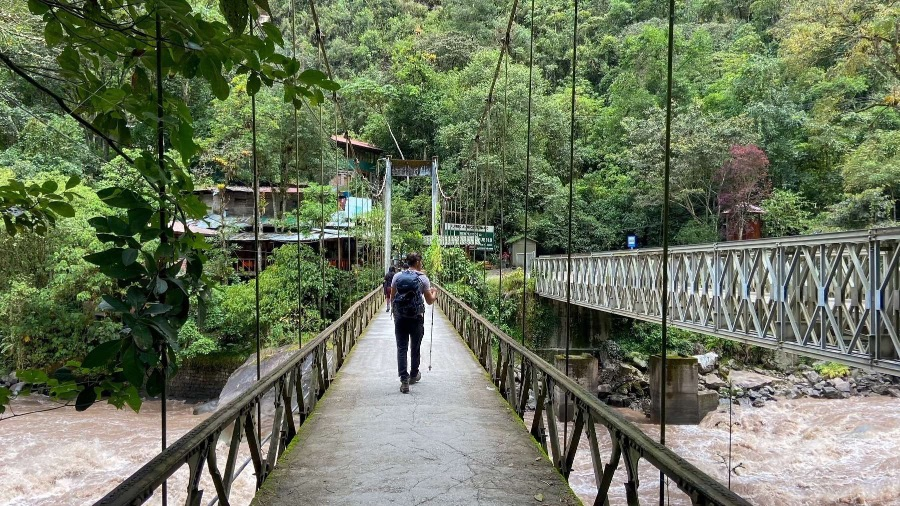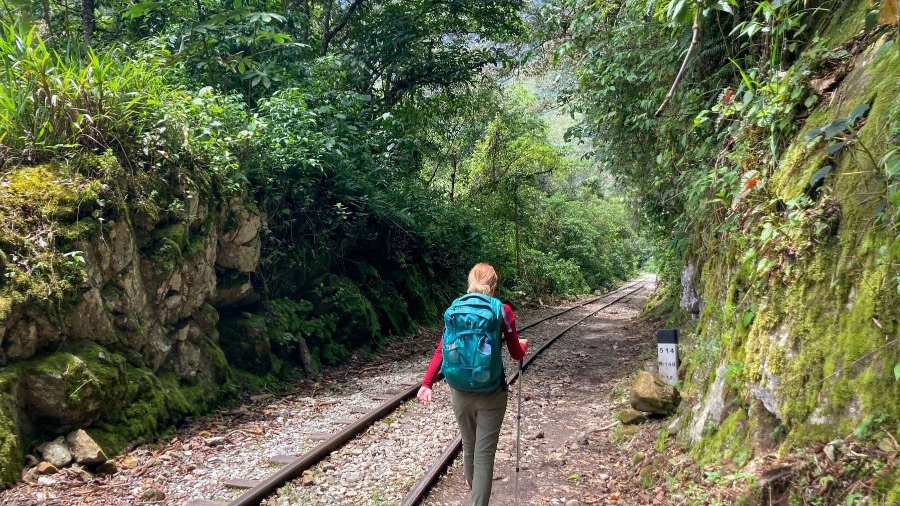
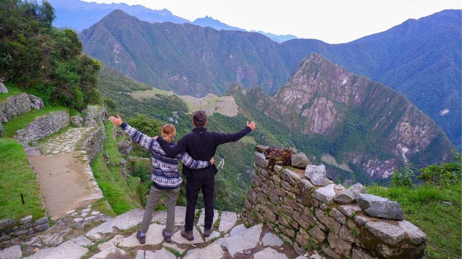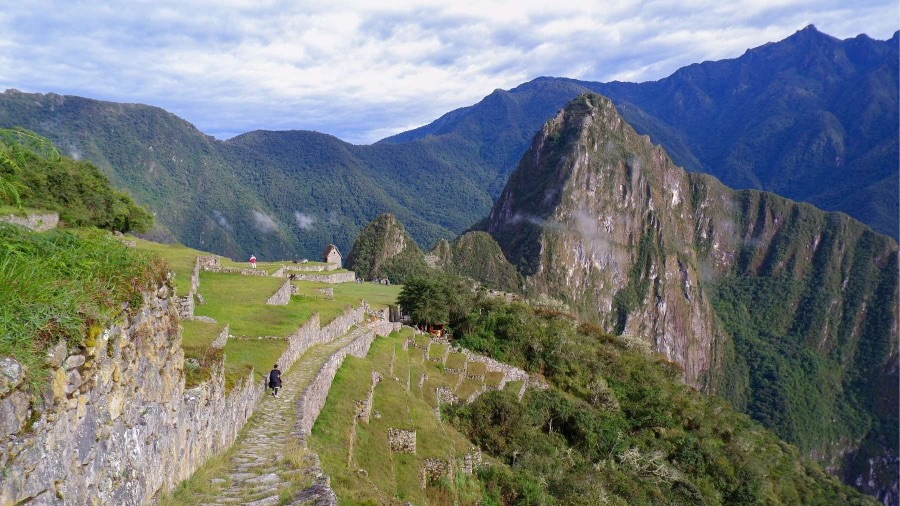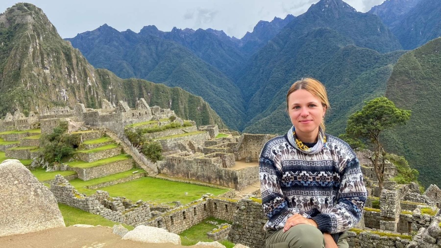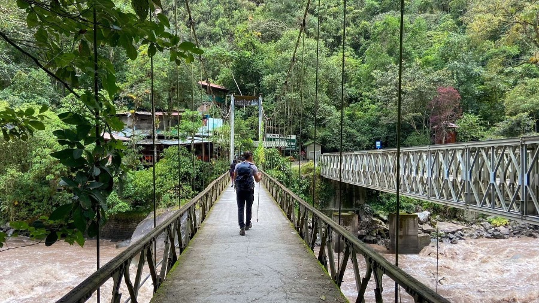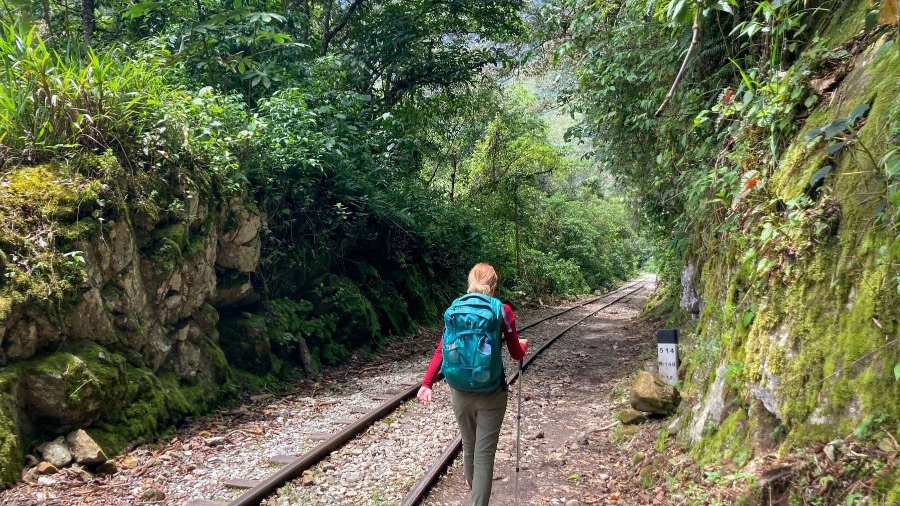
Day 56
We slept above 3500m elevation and the night got cold. We also heard some rain going down at night and felt that our luck is over. However, in the morning the skies were again blue and inviting us for a hike.
Today’s hike was with many historical sights along the way. It was incredible what structures were built on top of the mountains. Incas built many things deliberately with a lot of symbolism involved. Many structures from the top were representing their sacred animals: pumas, condors, or snakes, with the round temple, always being the head of the structure. With the clouds going through the mountain tops and sun peeking through the views got even more epic.
We had lunch overlooking Machu Picchu mountain which was hiding Machu Picchu behind itself. Lamas were running around that had proven to be extremely photogenic. I also tried carrying heavy porter’s bag up and down which made me appreciate even more the hard job they were doing.
This day felt physically even harder than the last. There was a lot of descent which hit the knees hard. We learned that running down instead of carefully walking down was a much better strategy although a bit more dangerous one.
Before finishing the hike we sat down to enjoy the sunshine and views from Inca terraces. The guide told how unbelievably lucky we are. We still didn’t get any rain although it’s a rainy season and due to Covid we rarely interacted with any other people and got to enjoy the trail to ourselves. It would be impossible 2 years ago with porters constantly running around and all the historical places swarming with tourists.
We got down to the camp and had mountain landscape views from our tent. I got an extremely cold shower that many hikers avoid doing but it refreshed me well for the last day.
The last dinner has proven to be the best one as well. The chef had even baked a cake to prove his tent-cooking skills. We said goodbye to all the staff before going to sleep as we are going to wake up at night to get to Machu Picchu as early as possible.


Day 55
Our alarm this morning was porters ‚Äúknocking‚Äù on the tent and telling coca tea, coca tea, coca tea. When we unzipped the tent we got hot coca tea straight into the ‚Äúbed‚Äù üçµ. The night went well as we slept on the comfortable mattress and had warm sleeping bags.
Today we planned to catch up with all the distance we lost due to strikes and finish the day according to the original plan. On the paper second day of the Inca Trail already is considered by far the hardest one, so it got even harder.
After having breakfast we got officially introduced to all the team that helps us do the hike. Everyone told their names, how old they are, how many years they are working on the trek, and most importantly, how many children they have. The age of porters, who carry 25-30kg each day with large backpacks vary a lot, youngest being 23 and oldest 64, which is very impressive.
The trail today went most of the time up and most of the time on the old stone Inca stairs. We had to elevate from 2700m to 4200m to what is called a Dead Woman’s Pass. It meant 4 hours of constant steep climbing which sounded terrifying. Fortunately, coca leaves came to the rescue. Chewing them together with the volcano ash released the effect which made breathing easy and us feeling really energetic. We reached the top successfully while admiring incredible views along the way.
The guide told interesting stories about their feeling towards Spanish conquerors and the remains of the Inca empire. Most of the people between themselves speak the Quechua language in this region and feel somewhat alienated by the “Lima side” of Peru which has taken Spanish customs much more willingly. As we are hiking with the guy from the indigenous Shipibo amazon tribes of Peru that also have their traditions and speak their language, it was interesting seeing him express his support and understanding of Quechua peoples.
After taking pictures we started going down. This section for most of us was even harder, as the descent was long and steep which hit knees hard. All the day was cloudy which made going up easier but when we reached the camp, the sun started shining. For now, we were really lucky with the weather as we hike during the rainy season.
In the camp, we were again treated to amazing meals and afterward only thing we wanted to do was just jump into our sleeping bags and fall asleep.
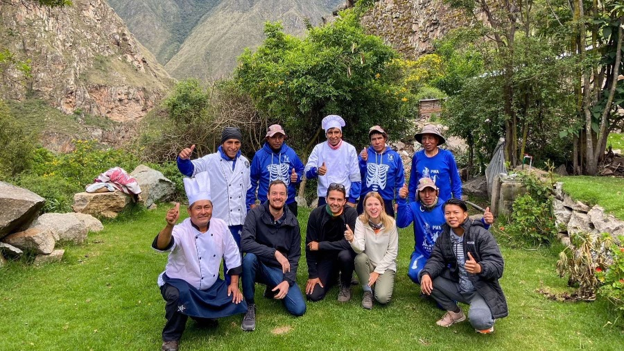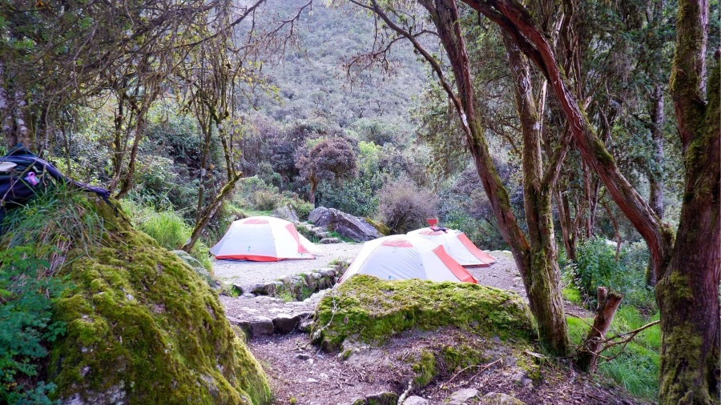
Day 54
We decided to go to Machu Picchu through 4 day/3 night Inca Trail. This is a famous trail that before Covid would require a reservation before a couple of months but now we arranged it before 4 days. Nevertheless, it’s a popular trail done almost all year round, and little did we know that the day is going to be a surprise even for the experienced guides.
6 in the morning our guide knocked on the hotel door and picked us up. We sat in the van and met other travelers we are going with. Again, before covid cheaper tours would have 10-14 people, now it was just 4 of us, so we got a semi-private tour. We were lucky to meet two interesting guys. One of them was a 30-year-old Canadian who was already retired as he invested in crypto currencies early enough. Another guy was a Peruvian he met in the Amazonian jungle whose family is organizing shamanic ayahuasca rituals and he has a baby alligator as a pet. So we immediately understood that the hike is not going to be dull.
The plan was to take 2.5h van ride to the entrance of the trail. We approached a small town 15km from the trail to pick up our porters, 6 guys who would carry all the food, tents, and kitchen equipment throughout the trail. We were told that some of them are late because of some strikes that are going on. We waited for 1 hour before all the porters arrived. We started moving again and headed towards the exit of the town. The first unusual thing we saw was a granny putting wood on the road and setting it to flames. As we couldn’t pass it our porters jumped from the van, moved the wood and we continued going. After 2 minutes we approached the bridge to exit the town but it was barricaded by local people. They were striking and even being asked nicely didn’t let us pass, even town mayor was there. We were told that all town is barricaded and all trains and buses are not running. The locals were protesting high gasoline prices but to get the attention of the government they chose their target - tourists going to Machu Picchu.
We got the only reasonable choice to leave the van and walk an additional 15km on the Machu Picchu train track to the entrance of the trail, hoping that it won’t be barricaded in any way. In 20 years of going on this trail, our guide has never experienced such a thing. Our van driver told us that he won’t be able to come back to Cusco until it gets dark, as locals told him that they will throw stones if he tries to drive. It was a strange but overall nice walk. Despite the other problems, the weather was unusually good. Every 50m or so we would see entire trees, tires, stones put onto the train track, and roads to block it. It was a bit surreal. After around 3 hours we reached the entrance of the trail. There we met other groups of hikers who told us that the entrance is blocked as well and they cannot enter for a couple of hours already. It looked like we would need to camp there and wait for protests to end. However, in the end, they agreed to let us go which was a big relief.
We started Inca Trail with a lunch. Our porters set up tables and cook made amazing meals just in the middle of nature. It was an incredible luxury to have.
After that, we hiked until dawn. It was a relatively easy hike but we got treated with amazing mountain views as well as occasional abandoned Inca towns. When we arrived at the camp our tents were already made. The cook again made us an amazing dinner with an entry and desserts. We cheered for an eventful day and went to sleep. Tomorrow serious hiking begins.
Day 53
We woke up early to watch the finale of F1 which did not disappoint üèé. Rooms at night get quite chilly here in Cusco (reminds us of winter in Spain) so we happily watched it covering ourselves with 3 layers of sheets üõè.
Later in the day, we were preparing for our upcoming 4-day hike to Machu Picchu. As we are going to climb up and down, go through different terrains and altitudes we tried to pack lightly but also have warm clothes for colder nights in the tent ⛺️. Exciting 4 days coming up!
Day 52
Our plan in the morning was to rent a car and go around Sacred Valley close to Cusco. Unfortunately, we didn’t succeed in rental but instead, we asked and were driven to a place where “colectivos” (van buses) go to the small town that we wanted.
We arrived in Chincheros - the city that is famous for its handicrafts, especially weaving. The streets were full of sellers offering their handmade things mostly textile.
As we got into a random shop, one crafter started showing us how they dye their wool, where they get those natural colors from, etc. Then followed the demonstration of their method of weaving and thread-making which I also got to try. That was an amazing experience!
That craftswoman told us a lot about their traditions and weaving work. It’s just incredible that she started to learn how to weave being 8 years old. The patterns that she makes are so difficult and take so much time! To produce one ~ 2-meter piece of the textile takes around 46 days.
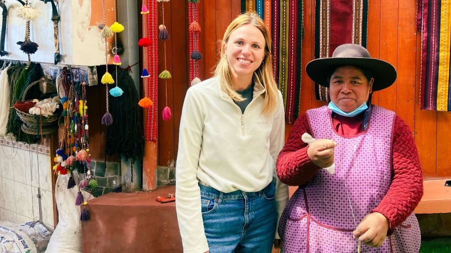
Day 51
In the morning we moved from the hostel in the city center to the hotel further away. Immediately it was a fun experience as we escaped tourist traps and entered the streets full of local people. We were treated to the cheapest lunch of our trip costing 5 soles (1.1 euro) for a soup, main meal and a drink, although it‚Äôs a small win as the city is full of 6 soles deals üòã.
When we entered streets full of barbershops I understood that it may be a good time to fix the mess on my head. Although again there were 5 soles deals for cutting hair, as a spoiled tourist, I decided to try to go for at least twice as expensive haircut ü§ë. The experience had its small differences from Lithuania. Instead of the hairdresser going around me when cutting here he was instead spinning the chair all the time, so you rarely are facing the mirror doing the process üòµ‚Äçüí´. He was also speaking super fast Spanish that was in times difficult for me to understand so I just decided to say si to everything he asked.
As the weather was getting cold in the evening and we knew we have more plans in the mountains in the upcoming weeks we decided to upgrade our wardrobe with alpaca ornamented sweaters. We spent the remaining evening walking around the city and admiring everything from the old Inca ruins to untidy local shops and restaurants. We decided to finally take some food from one of the pollerias (chicken restaurants) which are on every single corner of the city.
When we returned to the hotel the life was in full swing behind our windows. Music was going full blast as the family from children to grandparents were playing football in the street ⚽️.
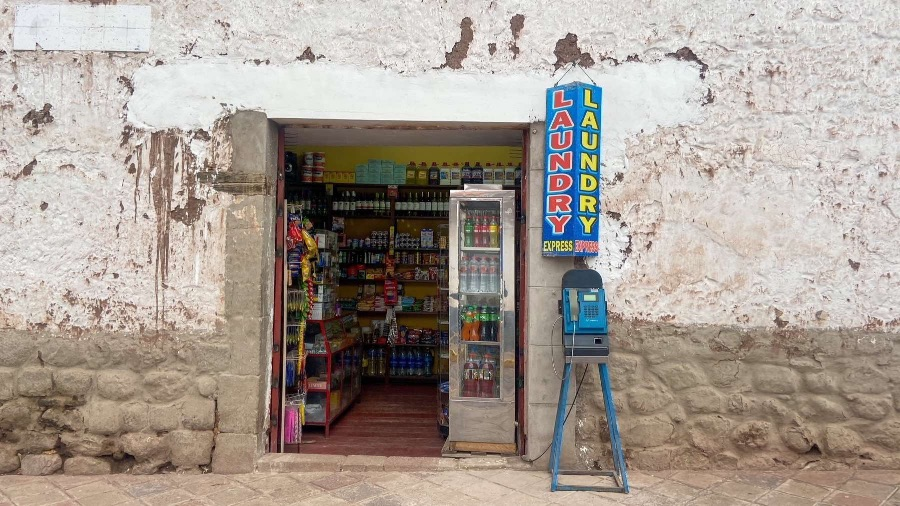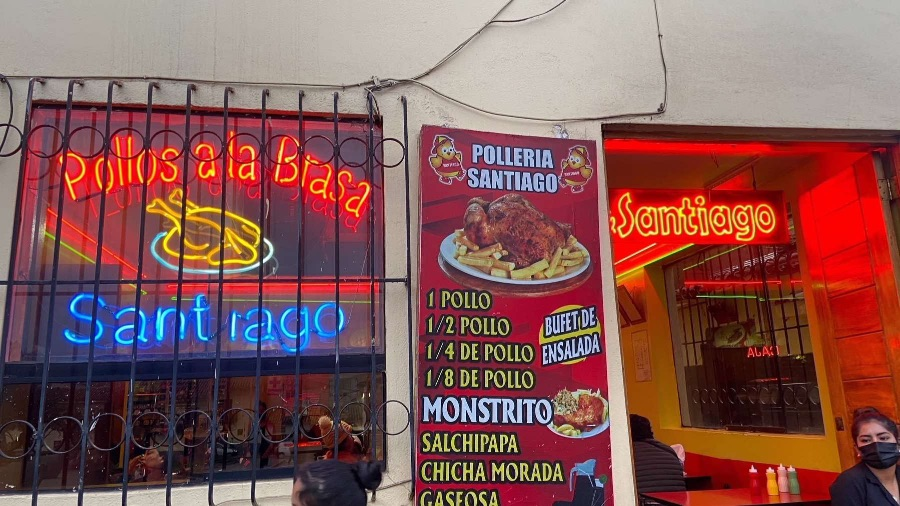
Day 50
Our 50th day, as it’s often now the case, began before the dawn as we took the bus to see a Rainbow Mountain. At least from pictures, this mountain with its colors looked incredible and we wanted to see it. What’s even more interesting is that this attraction only started to exist in 2016 when due to climate change the snow melted and local hikers discovered this wonder.
The biggest challenge for the Rainbow Mountain is its 5000m altitude which is difficult to handle for a lot of travelers. When we arrived at the base of the mountain at around 4500m there were already people barely catching a breath after only a couple of minutes of walking. Dozens of local people were quick to offer horses that take you halfway to the top. Our guide sprayed our hands with alcohol-coca spray and smelling them was supposed to make us less lightheaded. Chewing coca leaves or taking anti-altitude sickness medication (which also contains coca here) were valid options.
Step by step and in times catching our breath we reached the top. The climb wasn’t hard physically but I felt lightheaded although for Gabriele it was totally fine. The weather on the top was quite dramatic and changing all the time. One minute you would get decent visibility while the other the colorful mountain was almost completely hidden. After congratulating each other and taking some pictures we started to go down. In a couple of minutes, the temperatures dropped drastically and it started raining. We reached our bus with soaked ponchos and cold hands but also happy with the variety of experiences we just had. On the way back home we appreciated incredible views of mountain valleys and villages where people are living.
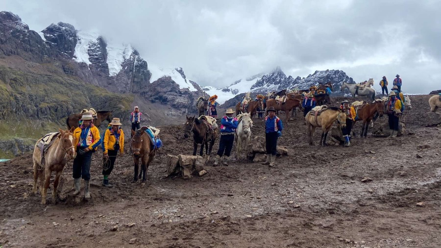
Day 49
Today was a calm day walking around the famous Cusco city. The weather and the feeling around the city were uplifting although you could feel its touristy downsides. We would feel like celebrities as one after other people were approaching us selling tours, bracelets, paintings or just inviting to restaurants. In the beginning, it was quite nice as some sellers would tell a bit about the city before beginning to sell although, in the end, it became tiring as we would try to be friendly with everyone.
We did manage to get a calmer time going away from the central square and simply diving into lovely small streets. The city is full of stairs going up and down and at this altitude, we were quick to lose our breath.
Day 48
We arrived in Cusco early in the morning. We had a guy from our hostel waiting for an hour to pick us up from the bus station holding our name tags. We’ve never had such luxury but it made the morning much easier.
The first impressions of Cusco were positive. Despite being touristy you immediately understand why it‚Äôs touristy. As the former capital of the Inca empire, the city and its surrounding still have a lot of heritage (not to mention Machu Picchu not far away). We got a room with an amazing old town view which we enjoyed while sipping an obligatory coca tea üçµ.
Day 47
Today was all about relaxing after 4 days of hiking. We could really feel our legs so we didn’t want to move too much today. Arequipa had plenty of local chocolate stores and cafes so we enjoyed one of them.
Besides that, we decided to go straight to Cusco thus we jumped on a night bus and hoped for a smooth ride üöå.
Day 46
Everybody at the hotel went to sleep very early to be able to wake up before the sunset. We woke up at 5 AM but were already one of the last ones as we heard people leave for the hike while we were still packing up. For all the goal was to come back to Cabanaconde town which was a very steep 3-hour hike away and would be much more difficult to do in the sunshine.
For us, it was a purely physical challenge going one step at a time. What didn‚Äôt make the hike easier were lots of presents left behind by mules who were taking some people or their bags up. The third day in a row a dog joined us for a part of the hike. You could meet the same dog one day in a town and the other day somewhere in the middle of the hike üê∂.
We were relieved to reach the top. We went to get the shower and then look for transportation back to Arequipa. It has proven to be quite a challenge as well, as locals were pointing to different directions in where the buses were stopping. Eventually, we found a van with just enough space for us to get into. This time I was prepared with stronger medications which put me to sleep for most of the 4 hours of the trip. The van went through the canyon in high altitudes where we got in the rain and even a snowstorm.
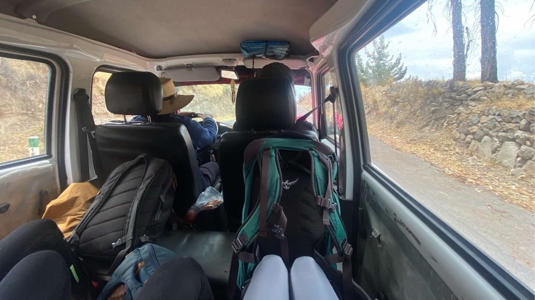
Day 45
Today’s hike went up and down across the canyon. The first half was all about going up and we deliberately chose more interesting paths to take. We were also surprised by a changed nature, with many cactuses making it hard to walk through tight paths. We walked through a small village in the canyon and it was unbelievable to see people living their day-to-day lives there.
Eventually, we went steep downhill to the town of Sangalle, a little oasis in the middle of the canyon where we spent the night. As it was the third hiking day in a row stretches and massages in the afternoon didn‚Äôt help anymore to remove stiffness and pain in the legs ü¶µ.
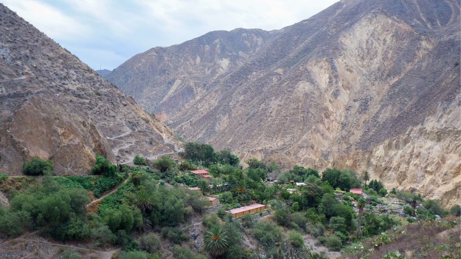
Day 44
Cabanaconde town is at the top of the canyon and today we planned to hike down to the bottom of it. We had our breakfast with 2 French couples who turned out to have chosen the same final destination as we did. We waved each other goodbye until the afternoon and all started hiking at our own pace.
The hike was a true test to ankles and shins as we descended 1.2km down. The heat also increased substantially during the day, even with some fires and smokes going around.
When we arrived at our accommodation we were eager to jump into the hot spring water pools that the place was known for. We were surprised to find not 4 but 8 French people already in there. It has proven to be a feature of the day, as one after another new couples or groups of people came and every single one of them was French. In the end, there were around 18 French and 2 us Lithuanians in all the hostel üá´üá∑, maybe we brought at least a bit of international feeling to them üòÖ.
We enjoyed the river and hot pools. We swam, jumped from the rocks, and spend couple of hours in the water which was super satisfying after the hike üèû.
We all stayed in the cute little houses and had dinner in the main area at the edge of the cliff.
 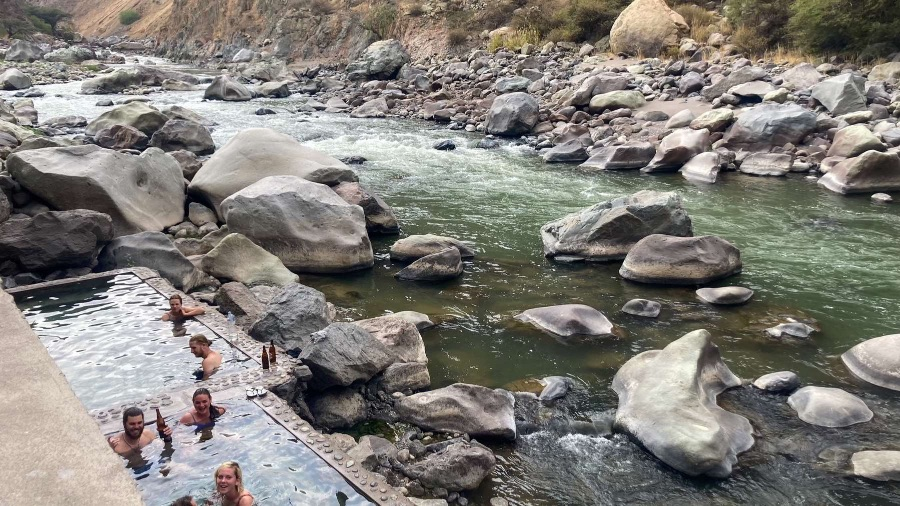
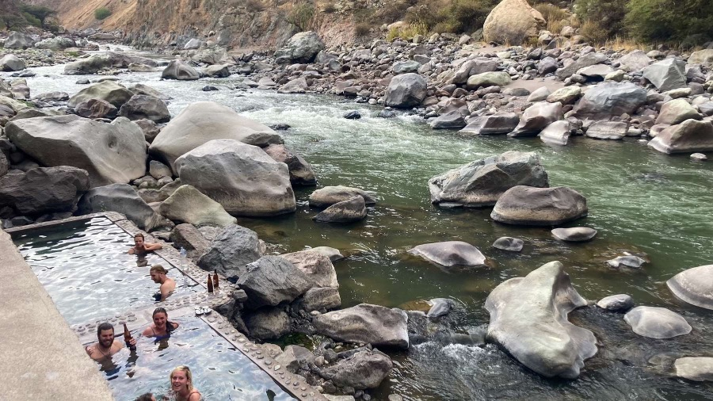
Day 43
We woke up incredibly early 2:30 AM to catch a 3 AM van going from Arequipa to the Colca Canyon. As the second deepest canyon in the world, it promised a lot of views, hikes, and interesting accommodations to us. However, the day didn’t quite start as planned.
The van ride was hard to take. Constant turns and quick stops not only didn‚Äôt allow us to sleep but also made us pray for the ride to end as soon as possible. I and Gabriele both felt dizzy, but for me especially, even anti-motion sickness medicine has proven to be useless. 4 hours into the trip, with less than an hour remaining I couldn‚Äôt take it anymore and started puking from motion-sickness ü§¢, the first time since childhood. Someone opened the door and I jumped from the van telling Gabriele that I‚Äôm not coming back to it. The guide in the van wasn‚Äôt too surprised, Gabriele took out the bags, he wished her good luck and the van left.
We didn’t have any reception in the area, but the workers around had shown us which direction to walk to reach the town. We were already at an altitude that is not familiar to us and also the first hour we continued walking uphill. Although we were catching our breath, I was just extremely happy not to be in that damned van.
The hike was unexpected, pretty tough but we didn‚Äôt lose our spirit. The views were incredible which we wouldn‚Äôt have been able to see and appreciate otherwise. The cars and vans passing by were beeping and offering a ride but taking it was out of the question. When we reached the highest part of the road, Gabriele bought a colorful hat from a local Peruvian woman üëí.
We finally arrived at the Cabanaconde town in the afternoon with the burning legs. Although the town is in the canyon it wasn’t touristy at all. Everywhere around in the canyon agriculture and farming is far more important and we witnessed workers finishing their day. We had our dinner and coca tea served by a local granny which was a perfect ending to a rollercoaster day.

Day 42
We started the day having breakfast in our hotel that is run by a couple from Venezuela and Peru. The husband who is from Venezuela told us a lot about the food and brought to taste various snacks.
We used the second part of the day to arrange a 3 day trip to the canyons to which we will go next üîú.
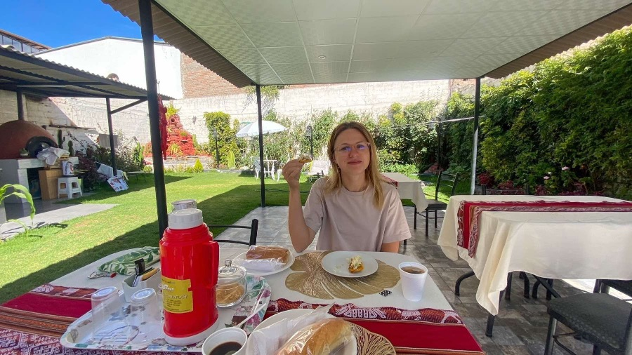
Day 41
While Gabriele was chilling I decided to take a hike towards the Chachani volcano to reach 3000 meters elevation. The hike went through the city at first and it was interesting to see fancier neighborhoods turn into car repair shops or garages and then quickly turn into villages without any electricity or water. You could see many half-built brick houses or even structures out of stones, with people around just doing their chores. There were dogs running and laying around everywhere and a couple of times I got lucky not to stand on one of the dogs by accident üê∂. At around 3000m the city was finally ending but that was the time for me to turn around as well. Interestingly, the road goes until 4700m elevation where people take a mountain bike ride to go down to the city.
Day 40
We took a rest day without any plans. So most of the day spent reading, watching series, sleeping and relaxing. Apart from that we had a little walk and enjoyed some local lunch, fresh juices, and pastries in the city market ü•≠. When we headed back home we stopped to see the view of volcanos colorized by the sunset üåÖ.
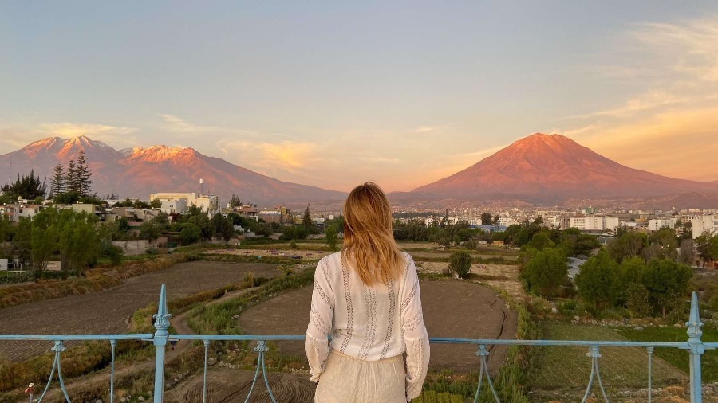
Day 39
After a shaky and wavy night bus ride, we arrived at Arequipa. No wonder, as the city is located at almost 2.5km altitude and is surrounded by 6km high volcanos üåã. The combination of higher altitude and a nightly bus ride made us feel a bit dizzy but after relaxing at our hotel we did go out to look around the city. It felt cozy and tidy. The central square was buzzing with people and even had a Christmas Santa waving at us üéÖ.
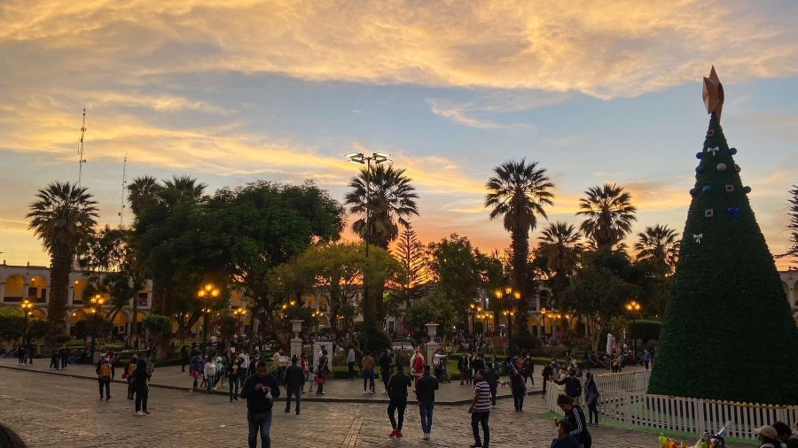
Day 38
We spend most of the day in the cozy and colorful backyard of our hostel. Since we didn‚Äôt know where we go next, we used this time to reflect on our wishes and plan a couple of days ahead. Our planning culminated in us taking a late evening bus and leaving the sand dunes behind üöå .
Day 37
In the morning, while it was still not too hot, I (Povilas) took the board, put on boots, and went to try sandboarding in the dunes. Although the experience is similar to snowboarding there were little differences that took some time to get used to. Needless to say, after 2 hours I was completely covered in sand but at least falling felt much cushier compared to snow üòÖ.
After morning activities, we took a tuk-tuk to escape the dunes and go to the nearest city Ica. It didn’t feel touristy and was very much alive. Also, it looked super cheap compared to Lima and other touristy areas. We took a chance to try picarones (local donuts) as well as get a usual intake of fruits sold on the street.
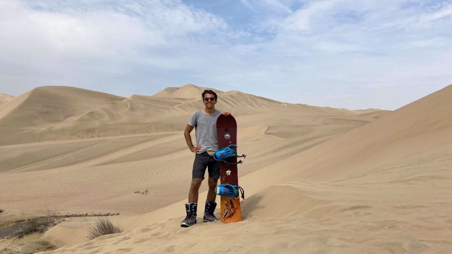
Day 36
Today we did a morning cardio climb to the highest dune and had breakfast with an amazing panorama. In the evening went for a buggy ride in the dunes with a driver. It was fun, especially when he went up and down the steepest dunes at full speed! We stopped for some belly sandboarding afterward.
The city itself is so small, that you can slowly walk around it in a max 30min. The grocery store it’s just a family home, so when I (Gabrielė) entered they were enjoying their dinner and didn’t pay attention to me at all, I had to interrupt them and they were ok with that. Probably it’s normal for them I thought. Later we enjoyed burgers in one hostel with a company of newborn cats who were playing around and stealing everyone’s attention!
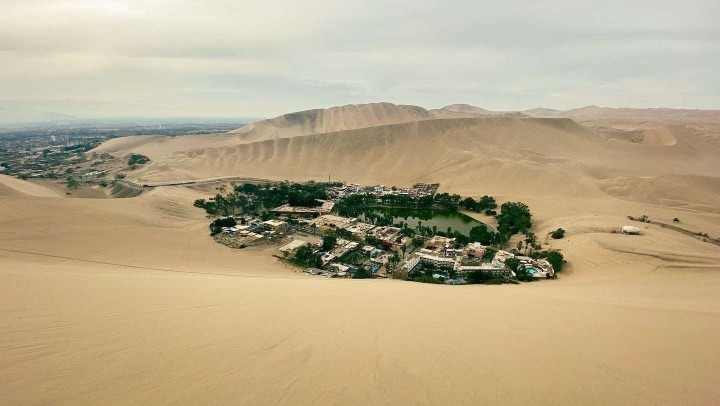
Day 35
When we were heading to the town of Paracas we had no idea you can take a short boat ride to see penguins, especially when seeing nothing but the desert all around. It took less than an hour to reach The Ballestas Islands, where we were greeted by thousands and thousands of birds and sea life around the rocky islands. Sure enough, we saw penguins (albeit a bit far away) üêß!
In the afternoon we headed deeper to Peru‚Äôs south, to a little Huacachina village which is situated around huge dunes. It welcomed us with the epic evening views and total freedom to explore the surroundings üß≠.

Day 34
In the morning we got to practice our bargaining skills when trying to rent our bikes in Paracas. After we got them we headed to Paracas National Reserve to see the desert and panoramic views of the ocean. The ride with the bikes wasn‚Äôt the easiest one as hilly terrain and strong winds constantly pushed us back. Nevertheless, we did manage to complete a 45km ride which was made worth it for the incredible views and the feeling of accomplishment after conquering all the hills in the desert üöµ.
As we were heading back home we were stoked to see lots of flamingos hanging out in the water ü¶©.
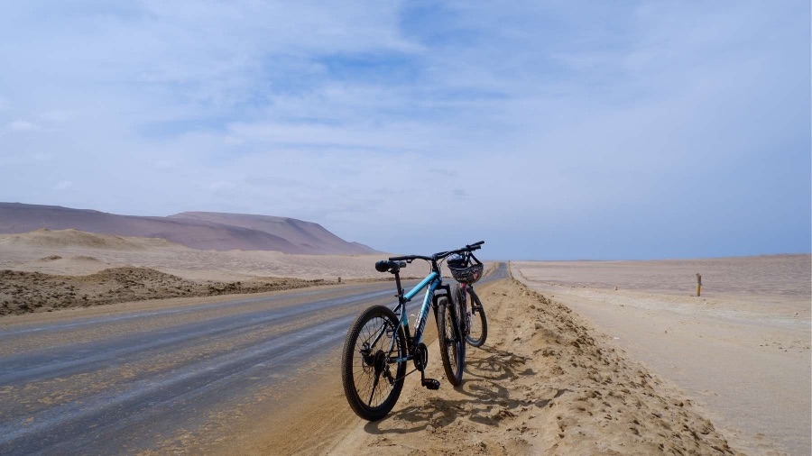
Day 33
We spent the morning buying a SIM card üì±. It was easier and better organized compared to Brazil, only involved waiting in a long line to get into carriers shop and then they took care of the rest.
Later we hopped on the bus and started our journey exploring Peru. The first views straight after leaving Lima didn‚Äôt disappoint üèú!
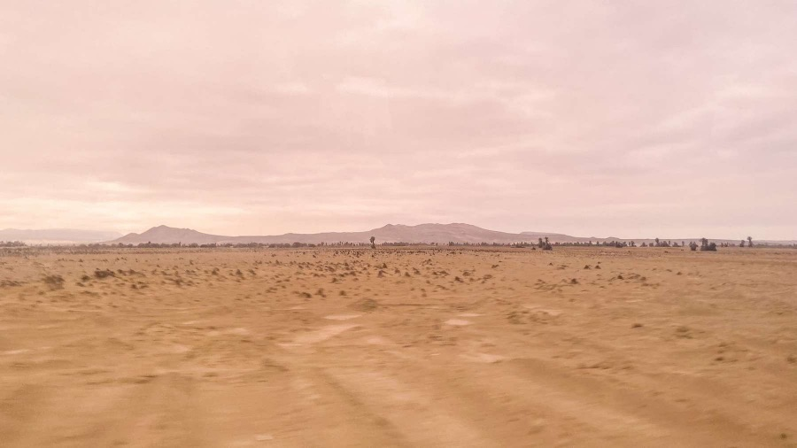
Day 32
Having recovered from the evening pisco sours we went to a market to try ceviche, lime-marinated seafood. Additionally, we enjoyed fresh juices and fruits which you can find anywhere around Lima üçéüçäüçá.
Day 31
We went for a walking tour with a guide in the Historic City Center of Lima. She told us about history, architecture and important people who lived there. We got to know more about Inca culture which is very unique! Finished the tour with a taste of Pisco Sour cocktail which we continued enjoying later in the night!üç∏

Day 30
We had a relaxing morning in our hostel, which has cozy terraces on the top of the building.
Later in the day, we explored the colorful neighborhoods of Lima buying street food while passing by. All the parts of the city close to the ocean looked really developed and lively, with many surfers and paragliders all around üèÑ‚Äç‚ôÇÔ∏è.
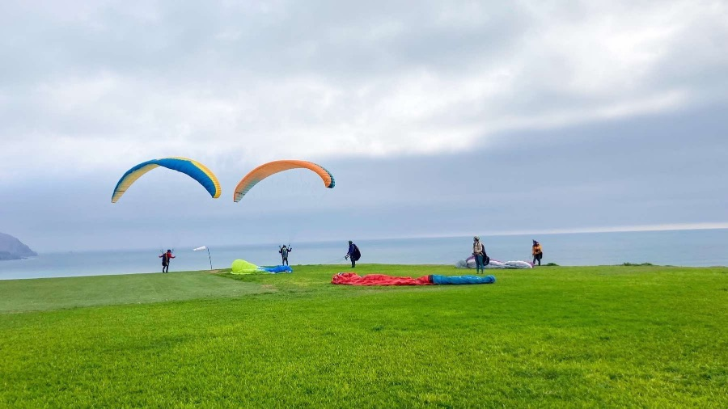
Day 29
We arrived in Lima late at night and despite being chased down by multiple taxi drivers, we took a 15 min walk to our hostel.
After having a light breakfast we had immediately felt a huge relief of being able to communicate in Spanish, as we spoke with a local worker who directed us to the nearest bus stop.
The scenes felt much more chaotic than anywhere in Brazil, as drivers or their assistants simply shouted the direction of the bus or waved the sign while passing through a bus stop. There was no silence in the bus itself as well, as one after another merchants came in telling their life stories and selling candies. We took advantage of that as well and started our day trying some local candy.
We reached Miraflores neighborhood which is located next to the ocean and is of the most touristic ones. We enjoyed an afternoon walk with the views of the boardwalk next to the cliff and the ocean.

Day 28
We set our next destination to be Peru but we woke up in the morning not knowing if we will manage to get there.
When we were boarding a plane to Brazil, we got asked to show our return tickets. Since we didn’t have any, we quickly booked a flight to Santiago, Chile which was the cheapest flight from Brazil. After we boarded, we simply requested a ticket refund, which was theoretically available. In a month the refund still wasn’t processed and we found out that for us it’s actually the cheapest option to fly to Peru from Santiago so we canceled the refund.
Next, we tried to understand what entry requirements we need to fulfill, for both Chile and Peru. Chile as it stands has crazy entry requirements, not only need to fill usual forms, make 2 tests both before and after the flights, report your location every day 10 days after arrival but also get your vaccination approved by their government. We quickly understood that it can take a few days for approval to come. We contacted the consulate, airports, airlines but nobody could answer us clearly if we need to fulfill any of these requirements of Chile. Peru seemed much more relaxed and we found out that we may not even need a test although again there was different information around the internet.
As we didn‚Äôt get any answers, we decided that the best and cheapest option is for us to do nothing ü§∑‚Äç‚ôÄÔ∏è. We haven‚Äôt filled any Chilean forms and didn‚Äôt make a Covid test.
We were anxious the whole morning to find out our fate. Luckily, our gamble worked out and we got accepted to the flights üòå. The airline worker admitted himself that they are lost between all the requirements, and they only just found out themselves and were surprised that people don‚Äôt need any test for a flight to Peru through Chile.
Still trying to get used to this Covid way of traveling üòÖ.
Day 27
We booked the flight to our next destination and Tuesday became our last day full in Brazil.
We went out to the downtown area and Mercado Municipal which is the main market of Sa√µ Paulo. The place was buzzing with people trying to sell their produce as well as small restaurants serving food and drinks. The most famous dish in the market is sandu√≠che de mortadella, which is well‚Ķ a sandwich with a lot of mortadella. We much more enjoyed trying different exotic fruits as well as local sweets üòã.
Since it’s our last day in Brazil it’s worth mentioning a couple of words about the food in general. Coming from Lithuania Brazil was a very smooth transition. Ordinary meals included meat/fish, potatoes, and rice with beans, beans being a very important part of any meal in general. However, there were usually very few vegetables coming together with the meal, so we got used to ordering them additionally.
The portions were usually very huge and we made the mistake many times of not sharing one meal. On the flip side, we would just ask to pack what we didn’t eat, so the same food was good for a couple of meals.
We also encountered many buffets, old and new. New ones had everything automated, where you get a badge when you enter, scan after you add food, and pay when leaving.

Day 26
After having a calm morning recovering from the race, we finally went out to look around S√£o Paulo itself. We went for a walk in Avenida Paulista, which is a main street in the city. As Brazil was celebrating its Republic Day today the street was closed for the cars and was in a celebratory mood. We got to enjoy street food, see local crafts, and hear street music.
São Paulo is one of the largest cities in the whole world and never-ending traffic constantly reminds us of that fact. Everywhere you look there are tall buildings, even our casually looking Airbnb building ended up having 26 floors. Despite all that, there’s still plenty of color in the city as moving around you cannot help but notice beautiful graffitis everywhere around.
Day 25
Race day.
The streets around the circuit were full from the early morning anticipating the upcoming event. The atmosphere in the stands was full of excitement despite a couple of hours of waiting in the heat for the race to start.
We couldn’t have been luckier with the race, witnessing an on-the-track battle between two championship contenders and the legendary comeback drive from Hamilton. Brazilians loved it cheering every single move and roaring when he moved into the first place.
Seconds after the finish flag was waved, the local crowd simply cut holes in the fences, jumped over the barriers, and ran into the track. We happily joined the party and started running to the opposite side of the track to witness the ceremony. We felt the length and incline of the track ourselves as we only reached the main straight the moment the ceremony ended.
The mood on the track was cheerful and peaceful, as people were chanting, taking pictures, and hoping to see any of the drivers.
What a weekend!
Day 24
We woke up the second day for Formula 1 not being too much in a hurry, as we knew how to reach it with the metro and what waiting times to expect from yesterday. How wrong we were! We arrived 1.5h before the practice session and were met with half of the kilometer queue to enter the circuit. The Saturday tracked much more people.
Sun was shining today, the mood was uplifting and DJ played the music as everybody waited for the afternoon’s sprint race. The stands were full and even felt overcrowded, as people went up to get a better view.
The crowd was on their feet during all the race, especially cheering all the overtakes by Hamilton. Gabriele of course outcheered them all seeing Norris of McLaren üß° going around Leclerc of Ferrari just in front of our stands üèé.
An exciting second day, can’t wait for tomorrow’s race!
Day 23
It was the starting day of our Formula 1 weekend. The Interlagos circuit is famous for its rainy weather and it was no different today with clouds, wind and chilly temperatures throughout the day ü•∂.
The midday practice session was the first time we heard formula engines roaring. Everybody got on their feet and started cheering the moment the first cars came out. It was interesting to see people in families or groups of friends supporting different teams. You could see parents supporting Red Bull and children supporting Mercedes without any feeling of confrontation. Throughout the qualifying, it became clear that Brazilians cheered Hamilton the most which is not always the case in all the other countries.
Enjoyed the first day. Looking forward to the weekend races!
Day 22
We spent the night on the bus, having tried leito (bed) seats for the first time. It doesn‚Äôt compare to a normal bed but it was nevertheless the best sleeping experience we had on the bus üò¥.
We arrived in rainy and cold S√£o Paulo. Nevertheless, the mood was ‚Äúsuper max‚Äù as the sign says why we are here. Ready for the race weekend üèé!

Day 21
The day started with a couple toucans joining us for breakfast. We were excited to see these colorful birds so close to us üòç.
After the breakfast we finished the exploration of Pantanal, this time riding horses üèá. It capped off our time in this region nicely, with us encountering couple more unseen animals and enjoying the nature for the last time.
Day 20
We continued our exploration of Pantanal by going to a 5 AM hike around the area. The weather is really hot during the day so early mornings and late evenings are the only chances to see animals. We encountered many anteaters and armadillos throughout the hike.
Later in the afternoon, we took a boat ride through the river. The fish and other water animals were hiding due to the heat but we were able to see different types of monkeys climbing the trees around the river. During the ride, we also removed a dozen traps set to catch alligators.
Day 19
Today we rented a car to go to stay in Pantanal, the world’s largest tropical wetland area (almost the size of the UK) and home to many exotic animals and birds, even pumas and jaguars.
We had to go off-road for an hour to reach our pousada we will be staying in.
We did a day and a night safari looking for wild animals and birds. As we stay just at the beginning of Pantanal it‚Äôs quite rare to see wild cats here, but we still saw many smaller animals such as armadillos, who were freely walking around us during dinner, and alligator-like caimans üê∏.
Day 18
In the morning we went for a hike. We reached a wonderful private river beach with the clear water which refreshed wonderfully after the hike ü•æ.
Day 17
After having our breakfast in the hostel and eating true vitamin C bombs acerola berries, we went on the road to reach Nascente Azul park for snorkeling.
As usual, we enjoyed the company of other Brazilian tourists and a Brazilian instructor/guide who only spoke Portuguese. I guess we are getting better at it as we had pretty okay conversations about nature, snorkeling, and Lithuania üòÖ.
The snorkeling was relaxing and we’re sure we’re going to do more of that in the future.
Day 16
Most of the day we spent traveling by bus. We felt really tired and sweaty after a 24-hour trip. When we finally arrived in Bonito got a nice welcome in our hostel. One lady met us with freshly picked and cooled mangos and told us everything about the surrounding area. This was probably the first person in two weeks that we had a normal conversation in English. It was so nice as we try to survive with portuspanglish and gestures all the time üòÖ
Day 15
There were weird Paraguayan ads all over this Brazilian region advertising cheap shopping which caught our attention. We lived just a bridge away from the second-largest Paraguayan city Ciudad del Este, which turns out to be one of the largest free-trade zones in the world. As we had some time in the morning, we decided to cross it. The border experience was completely different compared to yesterday. There were masses of people, cars, and buses passing to both sides of the bridge. We just joined the locals and walked together with them.
The streets were loud and chaotic. Everybody was selling something or giving brochures advertising an electronics shop. Next to the border alone there were at least a few large shopping centers. We spend a couple of hours walking around and shopping before coming back to Brazil.
Day 14
We started the day early to do a day trip to Argentina üá¶üá∑. Although we live close to the border, people around and online had different information of how we needed to get there and what kind of entrance requirements exist.
On the advice of our hotel, we spend 1.5h in the morning waiting for the bus to Argentina which never came. Other drivers explained that this bus is not running due to Covid. We decided to take an Uber to the border and see how it goes. The Brazil side of the border was empty and we could have just walked past it. We asked border patrol if we could just walk to Argentina because there’s no bus. Normally, it’s not allowed to pass this border walking, but this time they didn’t care, stamped our passports, and let us go. We understood that we need to walk 40 minutes on the other side of the river so we could reach the Argentinian side of the border. When we started walking some guy has caught us and got us a taxi to take us to the other side of the bridge. We were told that we need a Covid test to enter Argentina but they allowed us through with just the proof of vaccination. Success.
We spend the day on the Argentinian side of the Iguazu Falls. They had even more breathtaking views and more paths for hiking. We didn’t regret for a second that we went there.
Oh, and there were a lot of coaties all around us all the time, one of which climbed on the table and ate our coconut ü••üòÖ (photo below).
Day 13
We had a calmer day today reading books, swimming in the pool, and planning our next steps in the trip üòå.
However, in the afternoon we went to visit one of the largest dams in the world Itaipu Dam which is on the border of Paraguay and Brazil and is managed by both countries together⚡️.
Day 12
We began the day by taking a bus and hiking to see Iguazu Falls which are considered to be one of the 7 natural wonders of the world. These falls can be seen in both Argentina and Brazil. On the Brazil side, we had a chance to see breathtaking panoramic views and take a boat under some of the smaller falls making us return home completely soaked. ü§ø
Day 11
A prolonged bus ride.
We continued the ride throughout the night and the morning. Unfortunately, the whole road got blocked by a truck (no victims in the accident) and created a huge traffic jam. It increased the total trip time to well over 30 hours.
Throughout the trip, we had nice views and changing landscapes, from jungle-like mountains to more familiar flat fields. Also, we stopped in different buffet-style restaurants, which look to be quite a popular concept here.
Ready for some nature tomorrow! üå≥
Day 10
Our 26-hour bus journey across Brazil began today üöç.
We were stuck in Rio traffic with the slow Uber driver and had to run in the station asking everyone for directions to get to our bus on time. We came one minute before the bus left üòÖ.
The legroom looked promising although staying more than a day in a bus seemed daunting nonetheless.
Day 9
Samba night üíÉüèº.
Last night was a real Rio De Janeiro experience! We took samba class to learn basic moves of the dance, solo and with a partner. After that, we went to practice it in a Samba bar full of Brazilians. We tried to blend in with our moves and had lots of fun!
Day 8
Today we finally had our first hike of the trip. It was a relatively short one up the junglish mountain but it nevertheless made us sweat. At the end of the trail, we reached the cable car that took us up to the Pão de Açúcar peak. Luckily the skies opened up today to give us amazing views from the top!
Day 7
Colorful city center and fogy Jesus.
For the second day in a row, we were looking for chances to go on the famous summits of Rio but fog and clouds didn’t seem to be leaving the city any time soon. As the Uber driver said the weather não é normal. On the other hand, it was perfect for visiting colorful city center and seeing Escadaria Selarón.
In the evening we decided to take our chances to climb and see Cristo Redentor. As it was standing above the clouds, the panorama of the city was completely invisible, making the statue, even more, the center of attention.
Day 6
We woke up early in the morning and decided to go straight to Copacabana beach. Although it was a bit cloudy, we still managed to get a bit tanned, swim in a wavy ocean, and get our first caipirinhas üçπ.
Day 5
Travel day. We spent the whole night flying to S√£o Paulo, Brazil. Due to time zone shifts, the night became twice as long but the flight still went quite fast. After couple of hours of sipping coffee in a busy S√£o Paulo airport we finally got on the plane again and landed to our final destination Rio de Janeiro.
Day 4
Our last day in the Netherlands was all about being real tourists. We went to van Gogh‚Äôs museum and afterward ate waffles in a lively and sunny park üçÉ.
Ready for our longest flight ever in the evening!
Day 3
We spent the evening at the seaside of Netherlands in Zandvoort. There we had a chance to see Formula1 track and taste the local seafood üåä.
Day 2
We’ve been lucky enough to stay in our friend Victoria’s apartment in Haarlem during the last 2 nights and had been even luckier to go a birthday party on Friday night.
Fun experience! ü•Ç
Day 1
Exploring the streets of Amsterdam.
35847steps 26,6km reached in constantly changing weather conditions. At one minute sun is warmly shining and a few moments later it is pouring and we are running to hide in some store. That is traveling!